← 回股市觀察
逐檔技術線型分析
2026/11/18 · 成交金額上市前 50 名 ＋ 上櫃前 20 名（共 70 檔）· 公開資料整理
40194.91
加權指數 +102.80 點（+0.26%）
492 / 520
上市個股上漲／下跌家數
上漲 45.4% · 下跌 48.0% · 持平 6.6%（共 1083 檔）
352 / 433
上櫃個股上漲／下跌家數
上漲 40.4% · 下跌 49.7% · 持平 9.9%（共 871 檔）
統計範圍：當日成交金額上市前 50 名 ＋ 上櫃前 20 名（共 70 檔，皆為 4 位數代號的個股，不含 ETF／權證）。
兩個市場各自取前 N 名後合併呈現，卡片上標示市場別（上市／上櫃），清單也附市場分布。
條件統計：上市 上升趨勢：底底高 ＋ 頭頭高 0 檔、突破頸線 1 檔、底底高 0 檔、頭頭高 4 檔、站上月線 4 檔、月線向上 5 檔、外資買超 12 檔、量價攻擊（收紅＋大量） 24 檔、跌破前低（線型轉弱） 21 檔；上櫃 上升趨勢：底底高 ＋ 頭頭高 0 檔、突破頸線 0 檔、底底高 0 檔、頭頭高 1 檔、站上月線 2 檔、月線向上 3 檔、外資買超 10 檔、量價攻擊（收紅＋大量） 7 檔、跌破前低（線型轉弱） 7 檔。
五項全滿足（底底高＋頭頭高＋站上月線＋月線向上＋5 日線向上）：上市 無；上櫃 無。
資料日 2026/11/18。籌碼：上市為證交所三大法人、上櫃為櫃買中心三大法人；上櫃另附融資餘額。
每一檔都附上 K 線圖與線型說明：黃圈是轉折低點、粉圈是轉折高點、藍線是月線。
圖上兩條水平虛線、左側標數值：高點頸線（紅，連到最多「轉折高點」的那條水平線，代表上方壓力帶；收盤站上就算突破）與
低點頸線（綠，連到最多「轉折低點」的那條水平線，代表下方支撐帶；收盤跌破就算跌破）；
兩條線都只看最近 6 個轉折點、容忍同一價位帶 4%，連不到 2 個轉折點就不畫。
卡片的標籤可以點回上方對應清單，清單裡的股名也可以點到該檔。
本頁為公開資料（證交所每日收盤行情與三大法人、櫃買中心每日收盤行情與三大法人、Yahoo 股市日線）的整理與觀察，
不構成投資建議，不報牌、不預測、不下買賣決策。
大盤趨勢快篩（加權指數） 資料日 2026/11/18・來源：證交所公開資料
主狀態：跌破月線
前一交易日對照（11/17）：跌破月線（量比 20 1.06） → 今日跌破月線（量比 20 1.12）
指標、數值、判定（點開看 12 項明細：均線位置／排列、月線方向、頸線、轉折結構、位階、量價…）
加權指數今天漲 102.80 點（+0.26%），收 40,194.91、跌破月線 43,655.60；月線還在下彎，MA5 這條短均還沒收復，離高點頸線 47,615.17 還差 15.58%。
- 均線位置：4 條均線站上 0 條；沒站上的是 MA5 41,618.82（收盤比它低 3.42%）、MA10 41,800.12（收盤比它低 3.84%）、MA20 43,655.60（收盤比它低 7.93%）、MA60 45,972.55（收盤比它低 12.57%）
- 月線方向：月線 MA20 現在 43,655.60，比 5 個交易日前低 1,488.81 點 → 下彎
- 量能：集中市場成交 10,751.7 億，比 5 日均量大一些（1.08 倍）、比 20 日均量大一些（1.12 倍）
- 關鍵價位：高點頸線 47,615.17，還差 15.58%；低點頸線 38,610.95，還在下方 4.10%
- 大小型股：加權 +0.26%、櫃買 +0.31%，兩邊同向
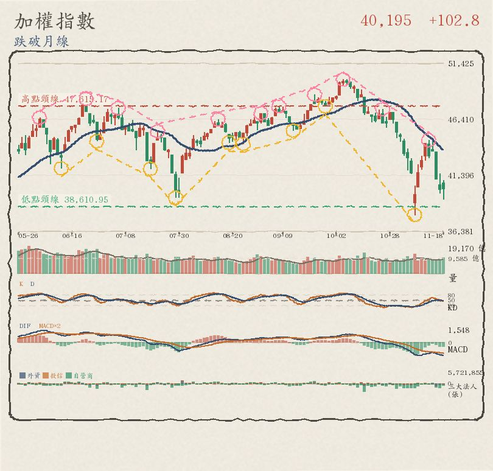
圖說：加權指數日 K（與個股圖相同標記）：黃圈＝轉折低點、粉圈＝轉折高點、虛線小圈＝還沒確認的轉折、藍線＝月線 MA20、水平虛線＝高點／低點頸線。最後一根是資料日當天。
本區塊為公開資料的技術面觀察，不構成投資建議，
不報牌、不預測、不下買賣決策。成交金額為集中市場總成交金額（含 ETF／權證），
與頁首摘要的「上市個股成交金額」口徑不同。標籤是統計，不是評分、也不是推薦。
上市 vs 上櫃（同期快篩）
加權 +0.26% vs 櫃買 +0.31%（同向） → 同向
（兩個市場分開寫，不合併成一個數字；櫃買為 TPEX 公開資料）
櫃買歷史：TPEX 逐日回補 130 根；來源：櫃買中心 www/zh-tw/indexInfo/sectinx（逐日，官方；OpenAPI tpex_index 只回當月）
（TPEX OpenAPI 只回當月，故逐日回補；歷史不足就不算該條均線並標「資料不足」，不用錯數字）
近 20 個交易日大盤狀態回溯（最新在上）（點開看逐日主狀態／量比／量價象限）
用同一支程式回算最近 20 個交易日（主狀態 S1~S8 與量比 20 皆為當日收盤當時的判定，
不是事後調整）；量比 20 未公布的日子寫「—」。
好條件最多的（前 10）
不好條件最多的（前 10）
本期市場狀態：空頭（等權指數在 60 日均線之下）（空頭期間：趨勢類條件反向（回測後 20 日差距 −0.9% ~ −2.1%），本排行改用超跌反轉類（跌破前低／在月線之下／月線下彎））
好條件（4 項）：跌破前低、在月線之下、月線下彎、外資買超。
不好條件（5 項）：站上月線、月線向上、突破頸線、量價攻擊（收紅＋大量）、外資賣超。
兩邊都是同一組資料（日線結構＋當日收盤量價籌碼）算出來的「符合項目數」，只是方向相反；
條件數不是評分、也不是推薦，不構成投資建議。
量價攻擊（收紅＋大量）（31 上市 24／上櫃 7）
跌破前低（線型轉弱）（28 上市 21／上櫃 7）
逐檔分析（70 檔）
區間或轉弱 成交金額 1106.37 億・全榜第 1 名（上市第 1 名）
好條件 2/4：在月線之下、月線下彎
不好條件 2/5：量價攻擊（收紅＋大量）、外資賣超
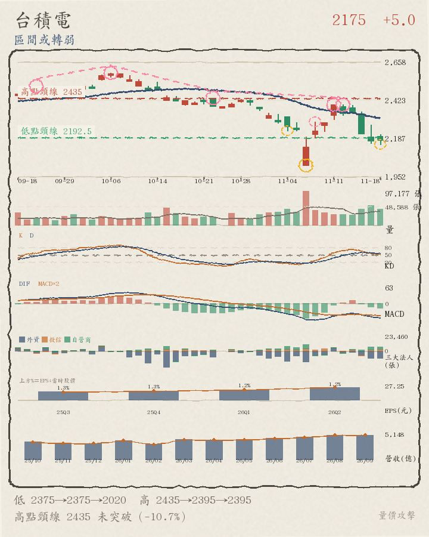
今天帶量收紅、跌破月線 2311.25，離高點頸線 2435 還差 10.7%，轉折還沒走出明顯方向。
- 月線位置：收盤 2175 在月線 2311.25 之下；5 日線 2250 也在月線之下（短均在下）；月線走平或向下、5 日線走平或向下
- 量能：成交量是 20 日均量的 1.27 倍，比 20 日均量大不少；收紅又量增，量價配合
- 關鍵價位：高點頸線 2435 還沒突破，差 10.7%；最近轉折高點 2395（低於 9.2%）；最近轉折低點 2020（高於 7.7%）
- 轉折結構：低點 2375、2375、2020 與高點 2435、2395、2395 都沒有明顯遞增，屬於區間震盪或轉弱；還沒確認的轉折低點 11-04 2235、11-18 2150；還沒確認的轉折高點 11-09 2290（圖上虛線小圈）
區間或轉弱 成交金額 659 億・全榜第 2 名（上市第 2 名）
好條件 1/4：月線下彎
不好條件 3/5：站上月線、量價攻擊（收紅＋大量）、外資賣超

今天帶量收紅、站上月線 3880.75，離高點頸線 5165 還差 23.7%，轉折還沒走出明顯方向。
- 月線位置：收盤 3940 在月線 3880.75 之上；5 日線 3909 也在月線之上（短均在上）；月線走平或向下、5 日線向上
- 量能：成交量是 20 日均量的 1.40 倍，比 20 日均量大不少；收紅又量增，量價配合
- 關鍵價位：高點頸線 5165 還沒突破，差 23.7%；最近轉折高點 4235（低於 7.0%）；最近轉折低點 3115（高於 26.5%）
- 轉折結構：低點 4430、4875、3115 與高點 5165、4245、4235 都沒有明顯遞增，屬於區間震盪或轉弱；還沒確認的轉折低點 11-17 3695；還沒確認的轉折高點 11-10 4065、11-18 4075（圖上虛線小圈）
區間或轉弱 成交金額 457.8 億・全榜第 3 名（上市第 3 名）
好條件 3/4：跌破前低、在月線之下、月線下彎
不好條件 2/5：量價攻擊（收紅＋大量）、外資賣超
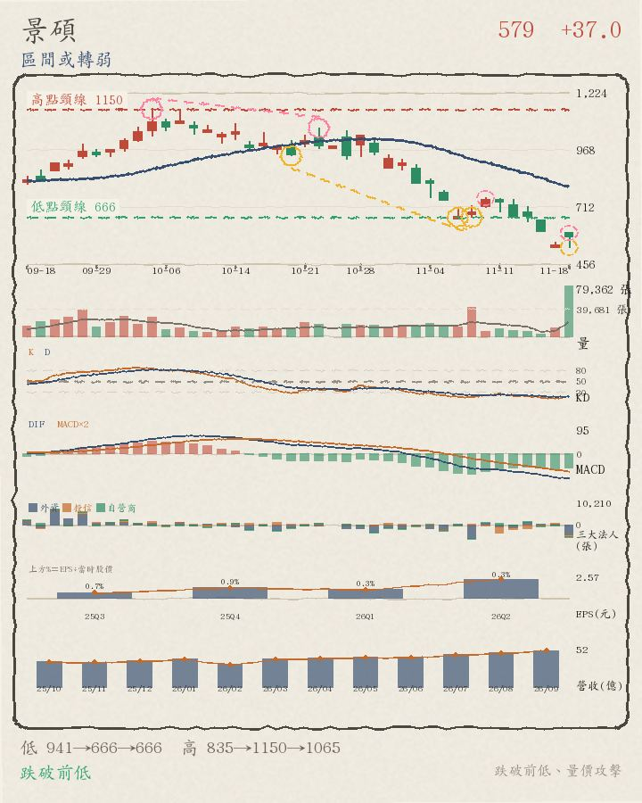
今天帶量收紅、跌破月線 802.25，跌破前一個轉折低點（高點頸線 1150 還在收盤上方），轉折還沒走出明顯方向。
- 月線位置：收盤 579 在月線 802.25 之下；5 日線 611.6 也在月線之下（短均在下）；月線走平或向下、5 日線走平或向下
- 量能：成交量是 20 日均量的 4.90 倍，比 20 日均量大不少；收紅又量增，量價配合
- 關鍵價位：高點頸線 1150 還沒突破、還在收盤上方 49.7%；最近轉折高點 1065（低於 45.6%）；最近轉折低點 666（低於 13.1%）
- 轉折結構：低點 941、666、666 與高點 835、1150、1065 都沒有明顯遞增，屬於區間震盪或轉弱；還沒確認的轉折低點 11-18 530；還沒確認的轉折高點 11-10 752、11-18 596（圖上虛線小圈）
區間或轉弱 成交金額 392.37 億・全榜第 4 名（上市第 4 名）
好條件 2/4：在月線之下、月線下彎
不好條件 1/5：外資賣超
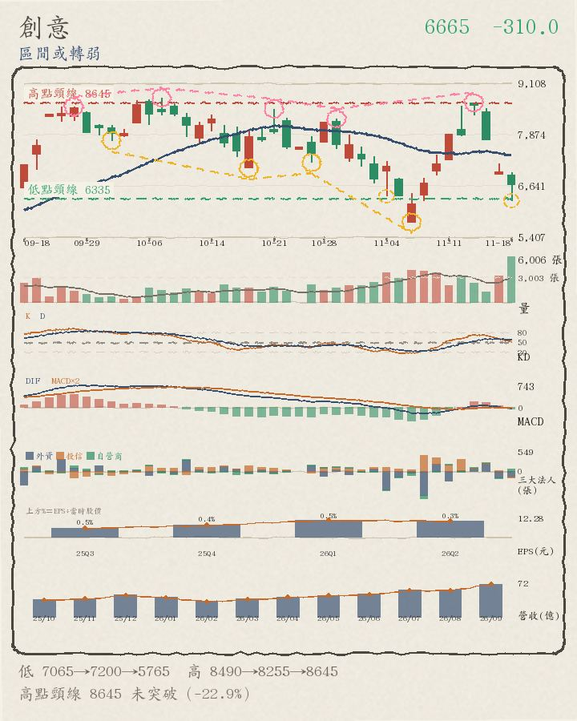
今天帶量收黑、跌破月線 7373.5，離高點頸線 8645 還差 22.9%，轉折還沒走出明顯方向。
- 月線位置：收盤 6665 在月線 7373.5 之下；5 日線 7572 也在月線之上（短均在上）；月線走平或向下、5 日線向上
- 量能：成交量是 20 日均量的 2.33 倍，比 20 日均量大不少；收黑卻量增，量價背離
- 關鍵價位：高點頸線 8645 還沒突破，差 22.9%；最近轉折高點 8645（低於 22.9%）；最近轉折低點 5765（高於 15.6%）
- 轉折結構：低點 7065、7200、5765 與高點 8490、8255、8645 都沒有明顯遞增，屬於區間震盪或轉弱；還沒確認的轉折低點 11-04 6390、11-18 6280（圖上虛線小圈）
區間或轉弱 成交金額 327.82 億・全榜第 5 名（上市第 5 名）
好條件 2/4：在月線之下、月線下彎
不好條件 1/5：外資賣超
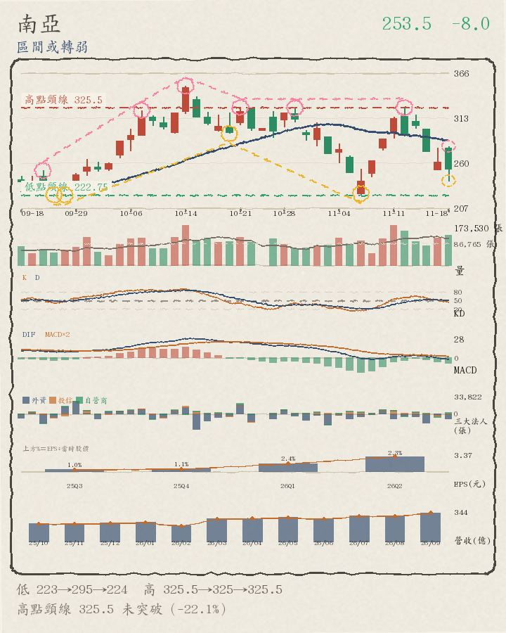
今天帶量收黑、跌破月線 286.75，離高點頸線 325.5 還差 22.1%，轉折還沒走出明顯方向。
- 月線位置：收盤 253.5 在月線 286.75 之下；5 日線 277.2 也在月線之下（短均在下）；月線走平或向下、5 日線向上
- 量能：成交量是 20 日均量的 1.25 倍，比 20 日均量大不少；收黑卻量增，量價背離
- 關鍵價位：高點頸線 325.5 還沒突破，差 22.1%；最近轉折高點 325.5（低於 22.1%）；最近轉折低點 224.5（高於 12.9%）
- 轉折結構：低點 223、295、224.5 與高點 325.5、325、325.5 都沒有明顯遞增，屬於區間震盪或轉弱；還沒確認的轉折低點 11-18 239.5；還沒確認的轉折高點 11-18 280（圖上虛線小圈）
區間或轉弱 成交金額 313.73 億・全榜第 6 名（上市第 6 名）
好條件 3/4：跌破前低、在月線之下、月線下彎
不好條件 2/5：量價攻擊（收紅＋大量）、外資賣超
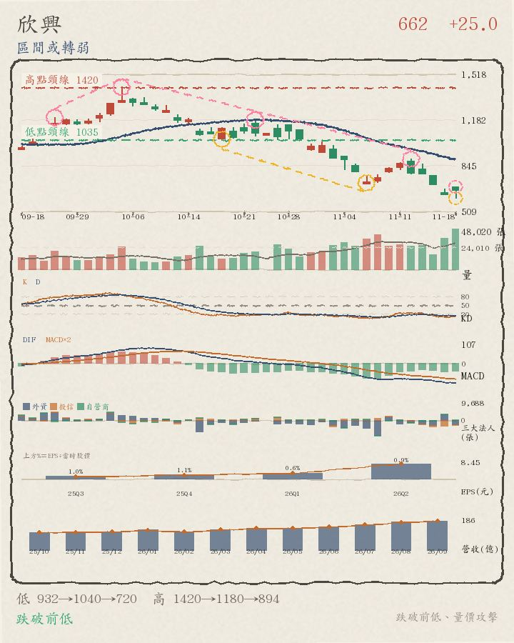
今天帶量收紅、跌破月線 890.25，跌破前一個轉折低點（高點頸線 1420 還在收盤上方），轉折還沒走出明顯方向。
- 月線位置：收盤 662 在月線 890.25 之下；5 日線 716.6 也在月線之下（短均在下）；月線走平或向下、5 日線走平或向下
- 量能：成交量是 20 日均量的 1.86 倍，比 20 日均量大不少；收紅又量增，量價配合
- 關鍵價位：高點頸線 1420 還沒突破、還在收盤上方 53.4%；最近轉折高點 894（低於 26.0%）；最近轉折低點 720（低於 8.1%）
- 轉折結構：低點 932、1040、720 與高點 1420、1180、894 都沒有明顯遞增，屬於區間震盪或轉弱；還沒確認的轉折低點 11-18 607；還沒確認的轉折高點 11-18 691（圖上虛線小圈）
區間或轉弱 成交金額 234.03 億・全榜第 8 名（上市第 7 名）
好條件 4/4：跌破前低、在月線之下、月線下彎、外資買超
不好條件 1/5：量價攻擊（收紅＋大量）
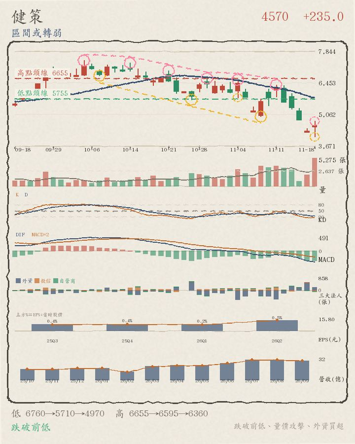
今天帶量收紅、跌破月線 5789.25，跌破前一個轉折低點（高點頸線 6655 還在收盤上方），轉折還沒走出明顯方向。
- 月線位置：收盤 4570 在月線 5789.25 之下；5 日線 4934 也在月線之下（短均在下）；月線走平或向下、5 日線走平或向下
- 量能：成交量是 20 日均量的 2.38 倍，比 20 日均量大不少；收紅又量增，量價配合
- 關鍵價位：高點頸線 6655 還沒突破、還在收盤上方 31.3%；最近轉折高點 6360（低於 28.1%）；最近轉折低點 4970（低於 8.0%）
- 轉折結構：低點 6760、5710、4970 與高點 6655、6595、6360 都沒有明顯遞增，屬於區間震盪或轉弱；還沒確認的轉折低點 11-04 5800、11-18 4075；還沒確認的轉折高點 11-18 4765（圖上虛線小圈）
區間或轉弱 成交金額 231.76 億・全榜第 9 名（上市第 8 名）
好條件 3/4：跌破前低、在月線之下、月線下彎
不好條件 1/5：外資賣超
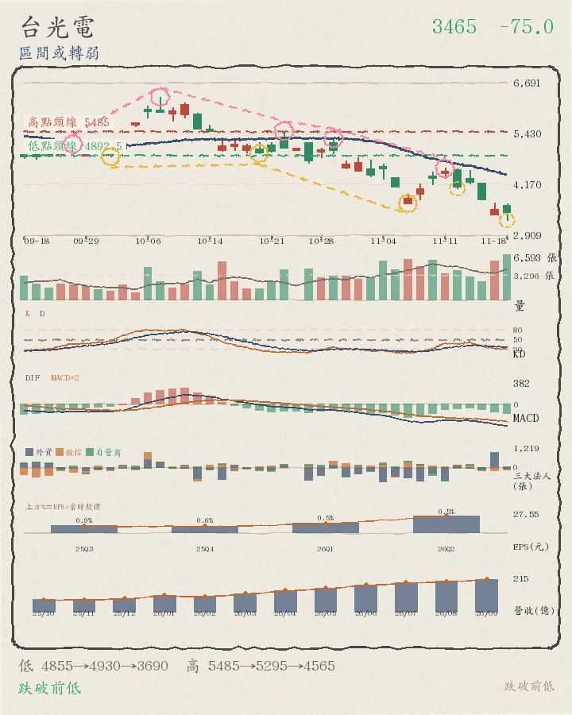
今天帶量收黑、跌破月線 4411，跌破前一個轉折低點（高點頸線 5485 還在收盤上方），轉折還沒走出明顯方向。
- 月線位置：收盤 3465 在月線 4411 之下；5 日線 3824 也在月線之下（短均在下）；月線走平或向下、5 日線走平或向下
- 量能：成交量是 20 日均量的 1.67 倍，比 20 日均量大不少；收黑卻量增，量價背離
- 關鍵價位：高點頸線 5485 還沒突破、還在收盤上方 36.8%；最近轉折高點 4565（低於 24.1%）；最近轉折低點 3690（低於 6.1%）
- 轉折結構：低點 4855、4930、3690 與高點 5485、5295、4565 都沒有明顯遞增，屬於區間震盪或轉弱；還沒確認的轉折低點 11-12 4065、11-18 3275（圖上虛線小圈）
區間或轉弱 成交金額 217.62 億・全榜第 10 名（上市第 9 名）
好條件 2/4：在月線之下、月線下彎
不好條件 2/5：量價攻擊（收紅＋大量）、外資賣超

今天帶量收紅、跌破月線 1304.75，離高點頸線 2115 還差 49.9%，轉折還沒走出明顯方向。
- 月線位置：收盤 1060 在月線 1304.75 之下；5 日線 1143 也在月線之下（短均在下）；月線走平或向下、5 日線走平或向下
- 量能：成交量是 20 日均量的 1.25 倍，比 20 日均量大不少；收紅又量增，量價配合
- 關鍵價位：高點頸線 2115 還沒突破，差 49.9%；最近轉折高點 1335（低於 20.6%）；最近轉折低點 1020（高於 3.9%）
- 轉折結構：低點 1560、1810、1020 與高點 1965、2115、1335 都沒有明顯遞增，屬於區間震盪或轉弱；還沒確認的轉折低點 11-11 1230、11-18 1000（圖上虛線小圈）
區間或轉弱 成交金額 202.78 億・全榜第 11 名（上市第 10 名）
好條件 3/4：跌破前低、在月線之下、月線下彎
不好條件 1/5：外資賣超
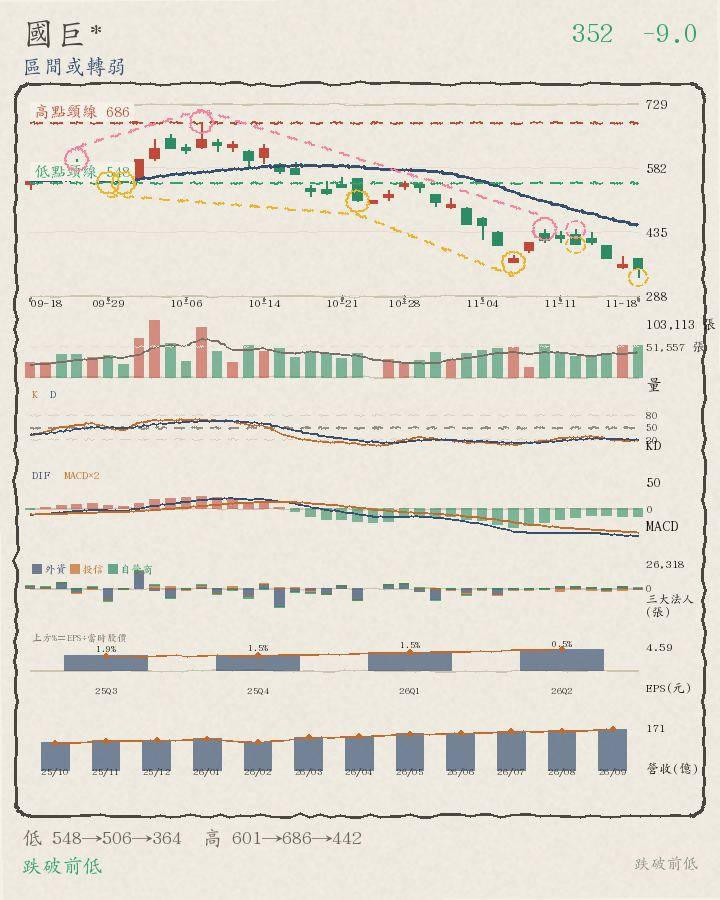
今天帶量收黑、跌破月線 450.25，跌破前一個轉折低點（高點頸線 686 還在收盤上方），轉折還沒走出明顯方向。
- 月線位置：收盤 352 在月線 450.25 之下；5 日線 381 也在月線之下（短均在下）；月線走平或向下、5 日線走平或向下
- 量能：成交量是 20 日均量的 1.41 倍，比 20 日均量大不少；收黑卻量增，量價背離
- 關鍵價位：高點頸線 686 還沒突破、還在收盤上方 48.7%；最近轉折高點 442（低於 20.4%）；最近轉折低點 364.5（低於 3.4%）
- 轉折結構：低點 548、506、364.5 與高點 601、686、442 都沒有明顯遞增，屬於區間震盪或轉弱；還沒確認的轉折低點 11-12 405.5、11-18 331；還沒確認的轉折高點 11-12 441（圖上虛線小圈）
區間或轉弱 成交金額 183.53 億・全榜第 12 名（上市第 11 名）
好條件 4/4：跌破前低、在月線之下、月線下彎、外資買超
不好條件 0/5：無
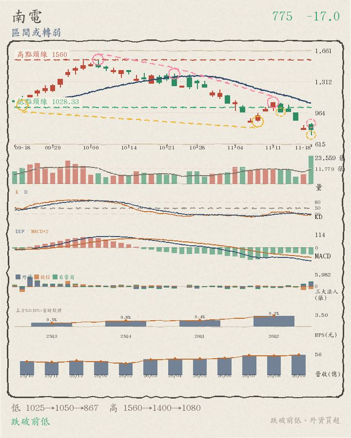
今天帶量收黑、跌破月線 1073.05，跌破前一個轉折低點（高點頸線 1560 還在收盤上方），轉折還沒走出明顯方向。
- 月線位置：收盤 775 在月線 1073.05 之下；5 日線 879.2 也在月線之下（短均在下）；月線走平或向下、5 日線走平或向下
- 量能：成交量是 20 日均量的 2.38 倍，比 20 日均量大不少；收黑卻量增，量價背離
- 關鍵價位：高點頸線 1560 還沒突破、還在收盤上方 50.3%；最近轉折高點 1080（低於 28.2%）；最近轉折低點 867（低於 10.6%）
- 轉折結構：低點 1025、1050、867 與高點 1560、1400、1080 都沒有明顯遞增，屬於區間震盪或轉弱；還沒確認的轉折低點 11-12 972、11-18 716；還沒確認的轉折高點 11-18 846（圖上虛線小圈）
世芯-KY 3661 上市
3950 +355.0
剛突破前高 成交金額 180.21 億・全榜第 13 名（上市第 12 名）
好條件 0/4：無
不好條件 4/5：站上月線、月線向上、量價攻擊（收紅＋大量）、外資賣超
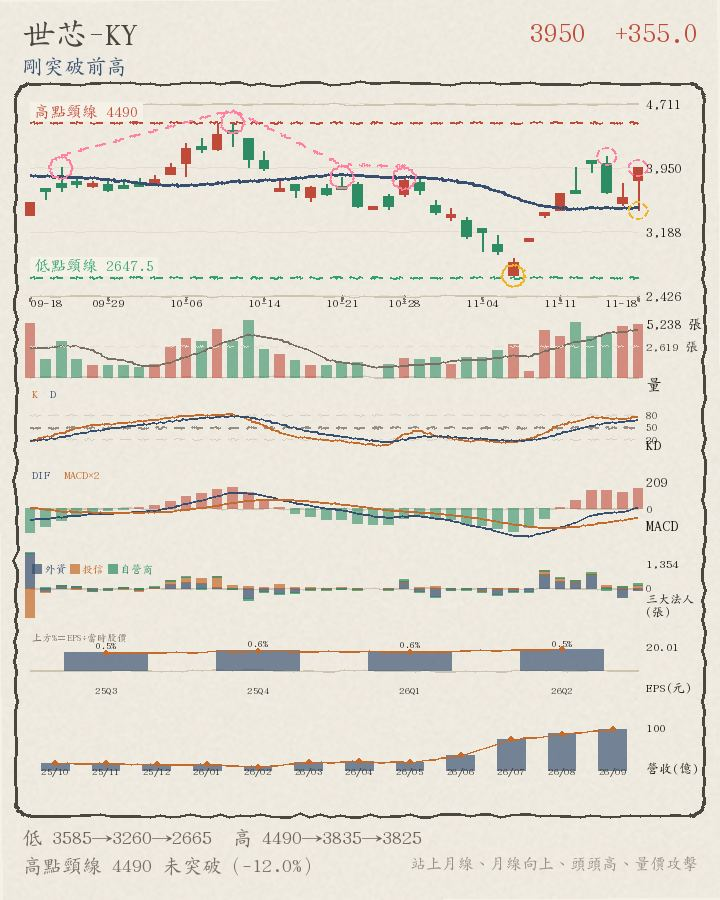
今天帶量收紅、站上月線 3484.25，離高點頸線 4490 還差 12.0%，高點還在墊高（但底部沒同步墊高）。
- 月線位置：收盤 3950 在月線 3484.25 之上；5 日線 3780 也在月線之上（短均在上）；月線向上、5 日線向上
- 量能：成交量是 20 日均量的 2.00 倍，比 20 日均量大不少；收紅又量增，量價配合
- 關鍵價位：高點頸線 4490 還沒突破，差 12.0%；最近轉折高點 3825（高於 3.3%）；最近轉折低點 2665（高於 48.2%）
- 轉折結構：高點 4490、3835、3825 墊高 6.8%（頭頭高），但低點 3585、3260、2665 沒有同步墊高；還沒確認的轉折低點 11-18 3440；還沒確認的轉折高點 11-16 4085、11-18 3950（圖上虛線小圈）
區間或轉弱 成交金額 163.45 億・全榜第 14 名（上市第 13 名）
好條件 2/4：在月線之下、月線下彎
不好條件 2/5：量價攻擊（收紅＋大量）、外資賣超
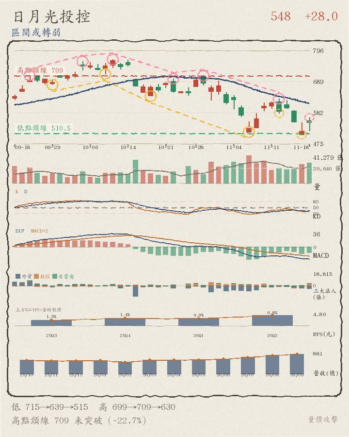
今天帶量收紅、跌破月線 614.5，離高點頸線 709 還差 22.7%，轉折還沒走出明顯方向。
- 月線位置：收盤 548 在月線 614.5 之下；5 日線 560.4 也在月線之下（短均在下）；月線走平或向下、5 日線走平或向下
- 量能：成交量是 20 日均量的 1.26 倍，比 20 日均量大不少；收紅又量增，量價配合
- 關鍵價位：高點頸線 709 還沒突破，差 22.7%；最近轉折高點 630（低於 13.0%）；最近轉折低點 515（高於 6.4%）
- 轉折結構：低點 715、639、515 與高點 699、709、630 都沒有明顯遞增，屬於區間震盪或轉弱；還沒確認的轉折低點 11-12 580、11-17 506；還沒確認的轉折高點 11-18 565（圖上虛線小圈）
區間或轉弱 成交金額 157.57 億・全榜第 15 名（上市第 14 名）
好條件 2/4：在月線之下、月線下彎
不好條件 1/5：外資賣超
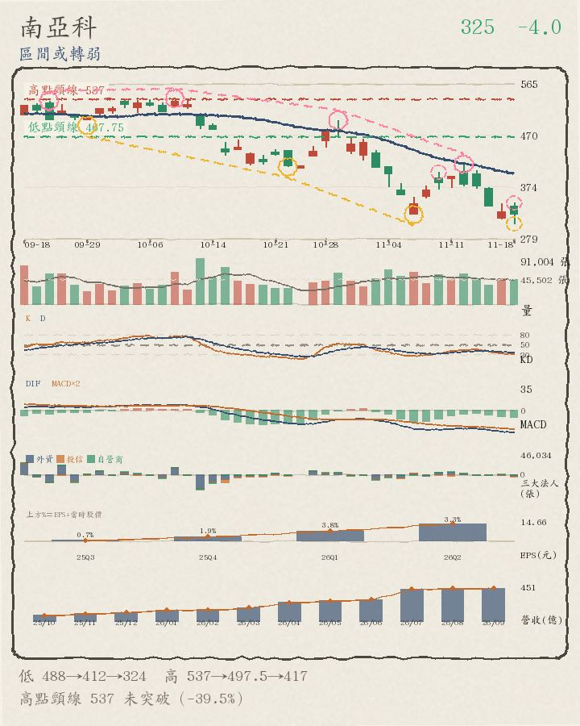
今天收黑、跌破月線 399.1，離高點頸線 537 還差 39.5%，轉折還沒走出明顯方向。
- 月線位置：收盤 325 在月線 399.1 之下；5 日線 350.1 也在月線之下（短均在下）；月線走平或向下、5 日線走平或向下
- 量能：成交量是 20 日均量的 1.02 倍，跟 20 日均量差不多
- 關鍵價位：高點頸線 537 還沒突破，差 39.5%；最近轉折高點 417（低於 22.1%）；最近轉折低點 324（高於 0.3%）
- 轉折結構：低點 488、412、324 與高點 537、497.5、417 都沒有明顯遞增，屬於區間震盪或轉弱；還沒確認的轉折低點 11-18 307；還沒確認的轉折高點 11-10 402、11-18 345（圖上虛線小圈）
區間或轉弱 成交金額 151.85 億・全榜第 16 名（上市第 15 名）
好條件 3/4：在月線之下、月線下彎、外資買超
不好條件 1/5：量價攻擊（收紅＋大量）
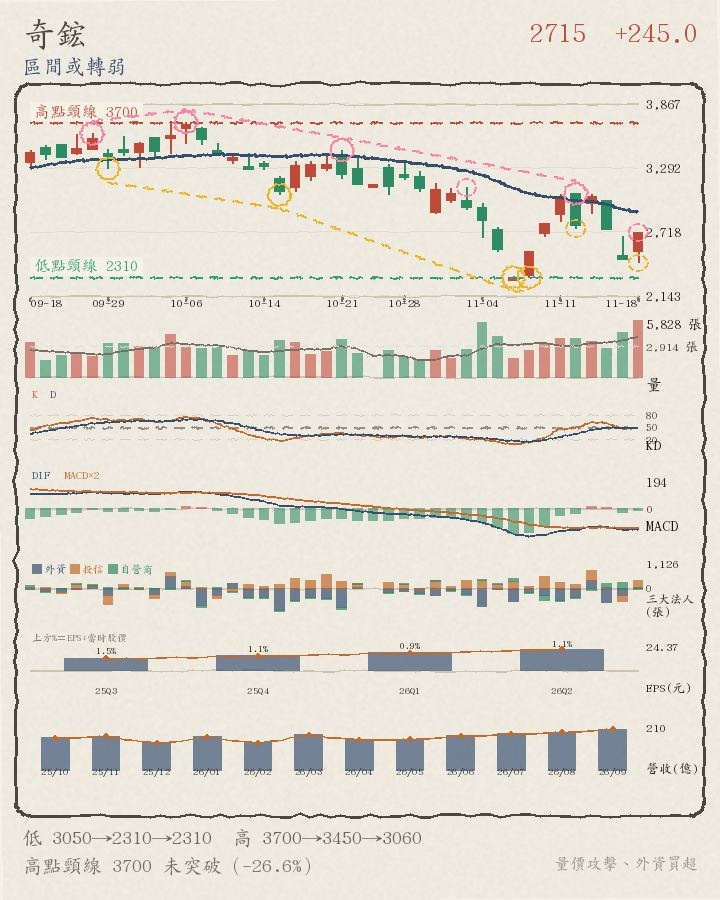
今天帶量收紅、跌破月線 2893.5，離高點頸線 3700 還差 26.6%，轉折還沒走出明顯方向。
- 月線位置：收盤 2715 在月線 2893.5 之下；5 日線 2748 也在月線之下（短均在下）；月線走平或向下、5 日線向上
- 量能：成交量是 20 日均量的 1.86 倍，比 20 日均量大不少；收紅又量增，量價配合
- 關鍵價位：高點頸線 3700 還沒突破，差 26.6%；最近轉折高點 3060（低於 11.3%）；最近轉折低點 2310（高於 17.5%）
- 轉折結構：低點 3050、2310、2310 與高點 3700、3450、3060 都沒有明顯遞增，屬於區間震盪或轉弱；還沒確認的轉折低點 11-12 2750、11-18 2440；還沒確認的轉折高點 11-03 3115、11-18 2715（圖上虛線小圈）
區間或轉弱 成交金額 128.63 億・全榜第 19 名（上市第 16 名）
好條件 1/4：在月線之下
不好條件 2/5：月線向上、外資賣超
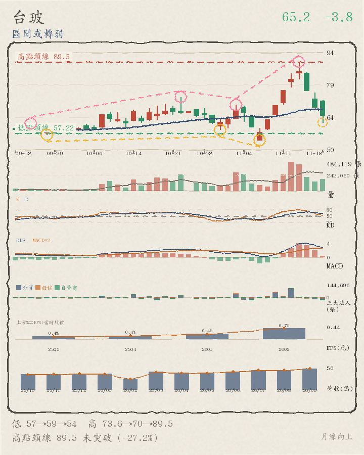
今天收黑、跌破月線 68.005，離高點頸線 89.5 還差 27.2%，轉折還沒走出明顯方向。
- 月線位置：收盤 65.2 在月線 68.005 之下；5 日線 75.52 也在月線之上（短均在上）；月線向上、5 日線向上
- 量能：成交量是 20 日均量的 1.00 倍，跟 20 日均量差不多
- 關鍵價位：高點頸線 89.5 還沒突破，差 27.2%；最近轉折高點 89.5（低於 27.2%）；最近轉折低點 54.1（高於 20.5%）
- 轉折結構：低點 56.6、58.8、54.1 與高點 73.6、70、89.5 都沒有明顯遞增，屬於區間震盪或轉弱；還沒確認的轉折低點 11-18 62.1（圖上虛線小圈）
區間或轉弱 成交金額 126.56 億・全榜第 21 名（上市第 17 名）
好條件 2/4：在月線之下、月線下彎
不好條件 2/5：量價攻擊（收紅＋大量）、外資賣超
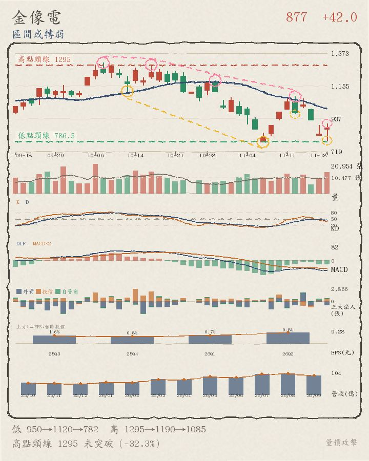
今天帶量收紅、跌破月線 1003.55，離高點頸線 1295 還差 32.3%，轉折還沒走出明顯方向。
- 月線位置：收盤 877 在月線 1003.55 之下；5 日線 928.8 也在月線之下（短均在下）；月線走平或向下、5 日線向上
- 量能：成交量是 20 日均量的 1.50 倍，比 20 日均量大不少；收紅又量增，量價配合
- 關鍵價位：高點頸線 1295 還沒突破，差 32.3%；最近轉折高點 1085（低於 19.2%）；最近轉折低點 782（高於 12.1%）
- 轉折結構：低點 950、1120、782 與高點 1295、1190、1085 都沒有明顯遞增，屬於區間震盪或轉弱；還沒確認的轉折低點 11-12 968、11-18 791；還沒確認的轉折高點 11-18 906（圖上虛線小圈）
區間或轉弱 成交金額 117.95 億・全榜第 22 名（上市第 18 名）
好條件 2/4：在月線之下、月線下彎
不好條件 2/5：量價攻擊（收紅＋大量）、外資賣超
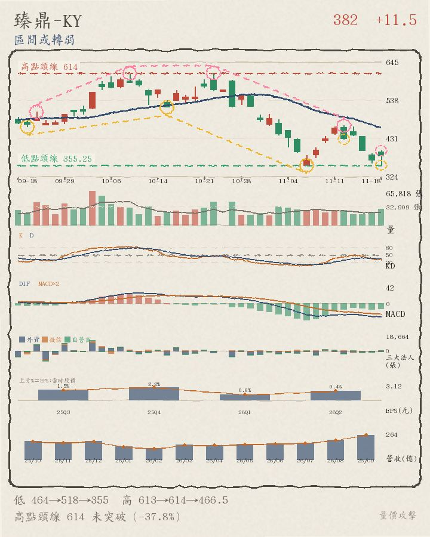
今天帶量收紅、跌破月線 461.3，離高點頸線 614 還差 37.8%，轉折還沒走出明顯方向。
- 月線位置：收盤 382 在月線 461.3 之下；5 日線 403.7 也在月線之下（短均在下）；月線走平或向下、5 日線走平或向下
- 量能：成交量是 20 日均量的 1.11 倍，比 20 日均量大一些；收紅又量增，量價配合
- 關鍵價位：高點頸線 614 還沒突破，差 37.8%；最近轉折高點 466.5（低於 18.1%）；最近轉折低點 355（高於 7.6%）
- 轉折結構：低點 463.5、518、355 與高點 613、614、466.5 都沒有明顯遞增，屬於區間震盪或轉弱；還沒確認的轉折低點 11-12 429、11-18 355.5；還沒確認的轉折高點 11-18 397（圖上虛線小圈）
區間或轉弱 成交金額 117.45 億・全榜第 23 名（上市第 19 名）
好條件 4/4：跌破前低、在月線之下、月線下彎、外資買超
不好條件 1/5：量價攻擊（收紅＋大量）
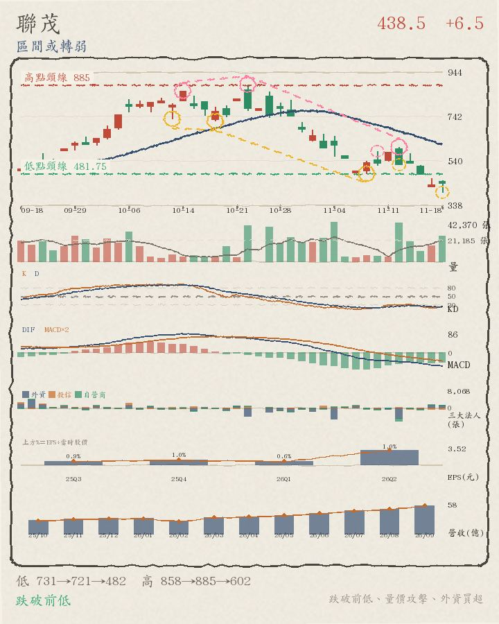
今天帶量收紅、跌破月線 614.625，跌破前一個轉折低點（高點頸線 885 還在收盤上方），轉折還沒走出明顯方向。
- 月線位置：收盤 438.5 在月線 614.625 之下；5 日線 481.1 也在月線之下（短均在下）；月線走平或向下、5 日線走平或向下
- 量能：成交量是 20 日均量的 1.43 倍，比 20 日均量大不少；收紅又量增，量價配合
- 關鍵價位：高點頸線 885 還沒突破、還在收盤上方 50.5%；最近轉折高點 602（低於 27.2%）；最近轉折低點 481.5（低於 8.9%）
- 轉折結構：低點 731、721、481.5 與高點 858、885、602 都沒有明顯遞增，屬於區間震盪或轉弱；還沒確認的轉折低點 11-12 522、11-18 397；還沒確認的轉折高點 11-10 584（圖上虛線小圈）
區間或轉弱 成交金額 114.78 億・全榜第 24 名（上市第 20 名）
好條件 2/4：在月線之下、月線下彎
不好條件 2/5：量價攻擊（收紅＋大量）、外資賣超
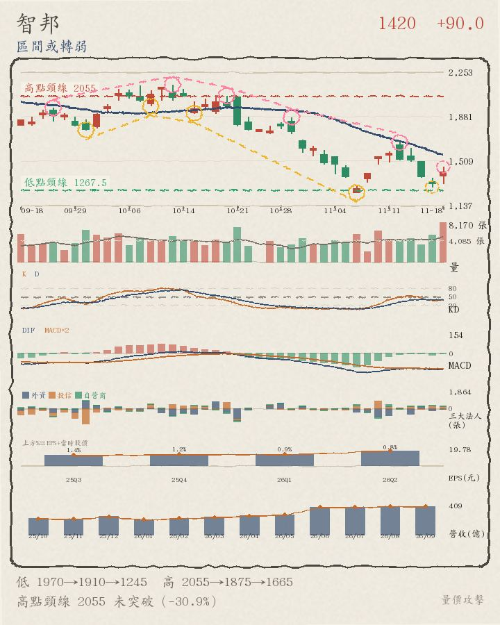
今天帶量收紅、跌破月線 1563，離高點頸線 2055 還差 30.9%，轉折還沒走出明顯方向。
- 月線位置：收盤 1420 在月線 1563 之下；5 日線 1435 也在月線之下（短均在下）；月線走平或向下、5 日線走平或向下
- 量能：成交量是 20 日均量的 1.89 倍，比 20 日均量大不少；收紅又量增，量價配合
- 關鍵價位：高點頸線 2055 還沒突破，差 30.9%；最近轉折高點 1665（低於 14.7%）；最近轉折低點 1245（高於 14.1%）
- 轉折結構：低點 1970、1910、1245 與高點 2055、1875、1665 都沒有明顯遞增，屬於區間震盪或轉弱；還沒確認的轉折低點 11-17 1290；還沒確認的轉折高點 11-18 1460（圖上虛線小圈）
區間或轉弱 成交金額 107.31 億・全榜第 25 名（上市第 21 名）
好條件 2/4：在月線之下、月線下彎
不好條件 1/5：外資賣超
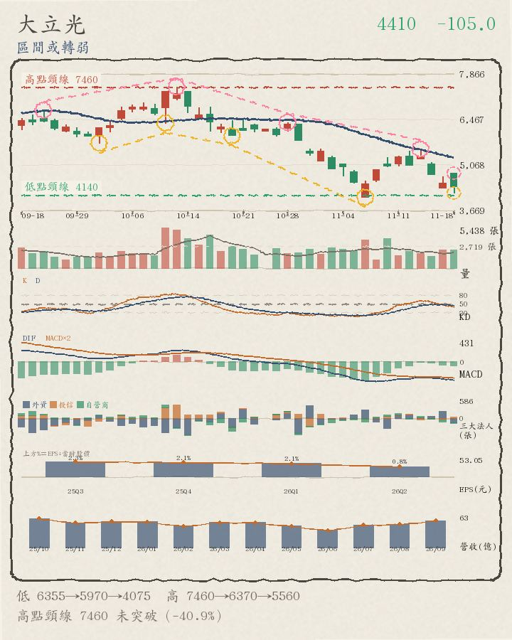
今天收黑、跌破月線 5296.75，離高點頸線 7460 還差 40.9%，轉折還沒走出明顯方向。
- 月線位置：收盤 4410 在月線 5296.75 之下；5 日線 4814 也在月線之下（短均在下）；月線走平或向下、5 日線走平或向下
- 量能：成交量是 20 日均量的 1.03 倍，跟 20 日均量差不多
- 關鍵價位：高點頸線 7460 還沒突破，差 40.9%；最近轉折高點 5560（低於 20.7%）；最近轉折低點 4075（高於 8.2%）
- 轉折結構：低點 6355、5970、4075 與高點 7460、6370、5560 都沒有明顯遞增，屬於區間震盪或轉弱；還沒確認的轉折低點 11-18 4205；還沒確認的轉折高點 11-18 4820（圖上虛線小圈）
區間或轉弱 成交金額 96.97 億・全榜第 27 名（上市第 22 名）
好條件 2/4：在月線之下、月線下彎
不好條件 1/5：外資賣超
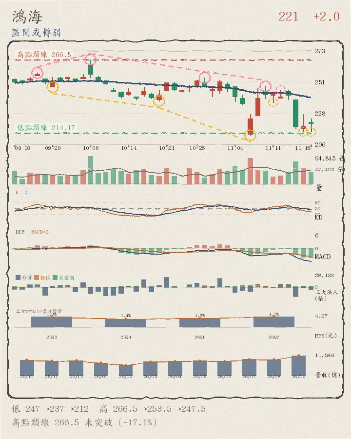
今天收紅、但成交量比平均少、跌破月線 239.525，離高點頸線 266.5 還差 17.1%，轉折還沒走出明顯方向。
- 月線位置：收盤 221 在月線 239.525 之下；5 日線 227.9 也在月線之下（短均在下）；月線走平或向下、5 日線走平或向下
- 量能：成交量是 20 日均量的 0.90 倍，比 20 日均量少一些；收紅但量縮，量價背離
- 關鍵價位：高點頸線 266.5 還沒突破，差 17.1%；最近轉折高點 247.5（低於 10.7%）；最近轉折低點 212.5（高於 4.0%）
- 轉折結構：低點 247、237、212.5 與高點 266.5、253.5、247.5 都沒有明顯遞增，屬於區間震盪或轉弱；還沒確認的轉折低點 11-17 215、11-18 215；還沒確認的轉折高點 11-12 245（圖上虛線小圈）
區間或轉弱 成交金額 92.49 億・全榜第 28 名（上市第 23 名）
好條件 2/4：在月線之下、月線下彎
不好條件 1/5：外資賣超
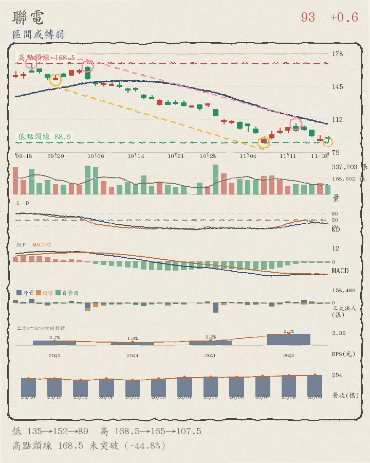
今天收紅、但成交量比平均少、跌破月線 107.485，離高點頸線 168.5 還差 44.8%，轉折還沒走出明顯方向。
- 月線位置：收盤 93 在月線 107.485 之下；5 日線 96.62 也在月線之下（短均在下）；月線走平或向下、5 日線走平或向下
- 量能：成交量是 20 日均量的 0.69 倍，比 20 日均量少很多；收紅但量縮，量價背離
- 關鍵價位：高點頸線 168.5 還沒突破，差 44.8%；最近轉折高點 107.5（低於 13.5%）；最近轉折低點 88.6（高於 5.0%）
- 轉折結構：低點 135、151.5、88.6 與高點 168.5、165、107.5 都沒有明顯遞增，屬於區間震盪或轉弱；還沒確認的轉折低點 11-18 89.2（圖上虛線小圈）
區間或轉弱 成交金額 91.66 億・全榜第 29 名（上市第 24 名）
好條件 4/4：跌破前低、在月線之下、月線下彎、外資買超
不好條件 0/5：無

今天帶量收黑、跌破月線 1409.75，跌破前一個轉折低點（高點頸線 1800 還在收盤上方），轉折還沒走出明顯方向。
- 月線位置：收盤 1135 在月線 1409.75 之下；5 日線 1294 也在月線之下（短均在下）；月線走平或向下、5 日線走平或向下
- 量能：成交量是 20 日均量的 2.05 倍，比 20 日均量大不少；收黑卻量增，量價背離
- 關鍵價位：高點頸線 1800 還沒突破、還在收盤上方 36.9%；最近轉折高點 1575（低於 27.9%）；最近轉折低點 1165（低於 2.6%）
- 轉折結構：低點 1470、1455、1165 與高點 1800、1770、1575 都沒有明顯遞增，屬於區間震盪或轉弱；還沒確認的轉折低點 11-12 1360、11-18 1055（圖上虛線小圈）
區間或轉弱 成交金額 86.93 億・全榜第 30 名（上市第 25 名）
好條件 2/4：在月線之下、月線下彎
不好條件 2/5：量價攻擊（收紅＋大量）、外資賣超
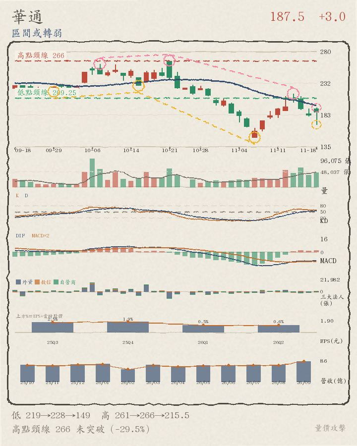
今天帶量收紅、跌破月線 197.95，離高點頸線 266 還差 29.5%，轉折還沒走出明顯方向。
- 月線位置：收盤 187.5 在月線 197.95 之下；5 日線 193.3 也在月線之下（短均在下）；月線走平或向下、5 日線向上
- 量能：成交量是 20 日均量的 1.49 倍，比 20 日均量大不少；收紅又量增，量價配合
- 關鍵價位：高點頸線 266 還沒突破，差 29.5%；最近轉折高點 215.5（低於 13.0%）；最近轉折低點 149（高於 25.8%）
- 轉折結構：低點 219、228、149 與高點 261、266、215.5 都沒有明顯遞增，屬於區間震盪或轉弱；還沒確認的轉折低點 11-18 168.5；還沒確認的轉折高點 11-18 194.5（圖上虛線小圈）
區間或轉弱 成交金額 81.65 億・全榜第 31 名（上市第 26 名）
好條件 3/4：跌破前低、在月線之下、月線下彎
不好條件 2/5：量價攻擊（收紅＋大量）、外資賣超
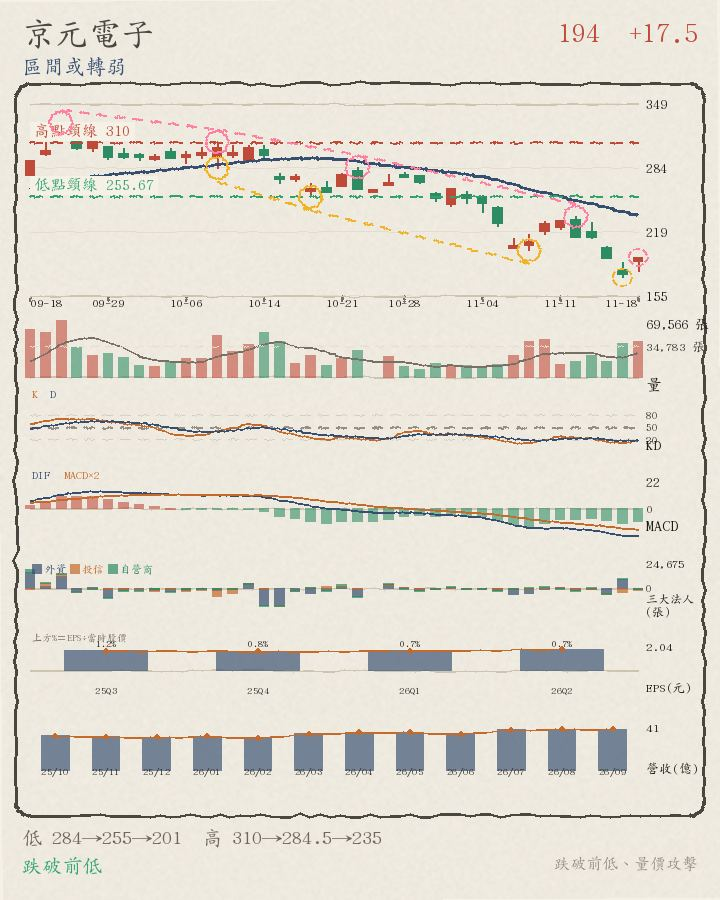
今天帶量收紅、跌破月線 236.525，跌破前一個轉折低點（高點頸線 310 還在收盤上方），轉折還沒走出明顯方向。
- 月線位置：收盤 194 在月線 236.525 之下；5 日線 198.1 也在月線之下（短均在下）；月線走平或向下、5 日線走平或向下
- 量能：成交量是 20 日均量的 1.96 倍，比 20 日均量大不少；收紅又量增，量價配合
- 關鍵價位：高點頸線 310 還沒突破、還在收盤上方 37.4%；最近轉折高點 235（低於 17.4%）；最近轉折低點 201（低於 3.5%）
- 轉折結構：低點 284、255、201 與高點 310、284.5、235 都沒有明顯遞增，屬於區間震盪或轉弱；還沒確認的轉折低點 11-17 173.5；還沒確認的轉折高點 11-18 194（圖上虛線小圈）
區間或轉弱 成交金額 78 億・全榜第 33 名（上市第 27 名）
好條件 2/4：在月線之下、月線下彎
不好條件 1/5：外資賣超
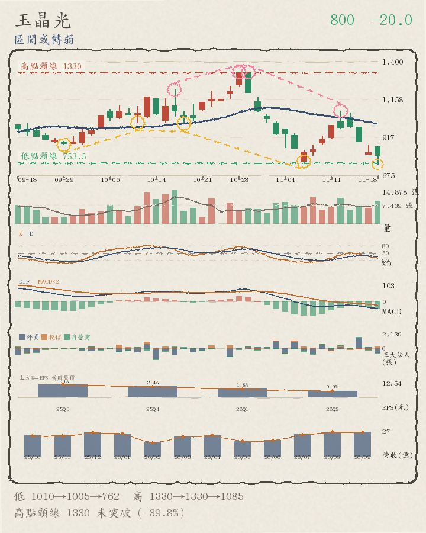
今天帶量收黑、跌破月線 1004.15，離高點頸線 1330 還差 39.8%，轉折還沒走出明顯方向。
- 月線位置：收盤 800 在月線 1004.15 之下；5 日線 895.2 也在月線之下（短均在下）；月線走平或向下、5 日線向上
- 量能：成交量是 20 日均量的 1.32 倍，比 20 日均量大不少；收黑卻量增，量價背離
- 關鍵價位：高點頸線 1330 還沒突破，差 39.8%；最近轉折高點 1085（低於 26.3%）；最近轉折低點 762（高於 5.0%）
- 轉折結構：低點 1010、1005、762 與高點 1330、1330、1085 都沒有明顯遞增，屬於區間震盪或轉弱；還沒確認的轉折低點 11-18 745（圖上虛線小圈）
區間或轉弱 成交金額 75.65 億・全榜第 34 名（上市第 28 名）
好條件 4/4：跌破前低、在月線之下、月線下彎、外資買超
不好條件 0/5：無
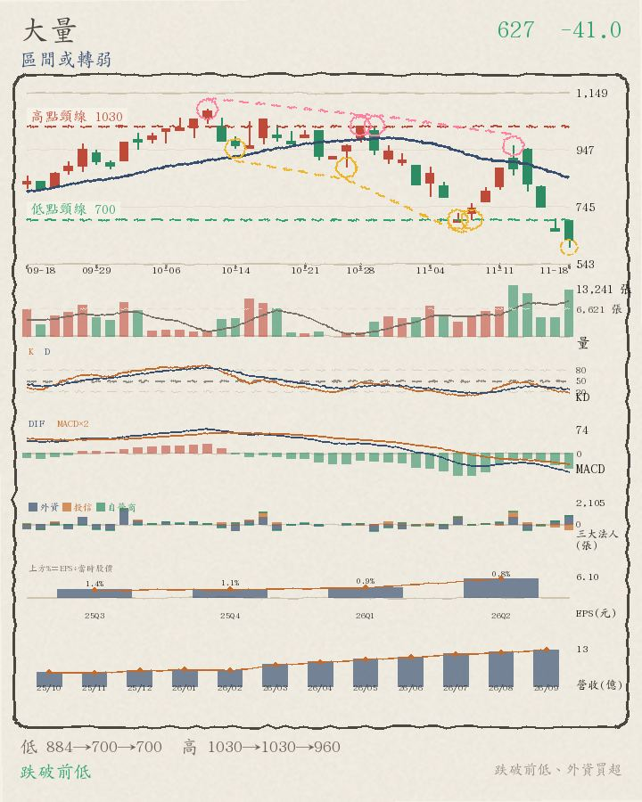
今天帶量收黑、跌破月線 848，跌破前一個轉折低點（高點頸線 1030 還在收盤上方），轉折還沒走出明顯方向。
- 月線位置：收盤 627 在月線 848 之下；5 日線 748 也在月線之下（短均在下）；月線走平或向下、5 日線走平或向下
- 量能：成交量是 20 日均量的 2.48 倍，比 20 日均量大不少；收黑卻量增，量價背離
- 關鍵價位：高點頸線 1030 還沒突破、還在收盤上方 39.1%；最近轉折高點 960（低於 34.7%）；最近轉折低點 700（低於 10.4%）
- 轉折結構：低點 884、700、700 與高點 1030、1030、960 都沒有明顯遞增，屬於區間震盪或轉弱；還沒確認的轉折低點 11-18 602（圖上虛線小圈）
區間或轉弱 成交金額 73.45 億・全榜第 36 名（上市第 29 名）
好條件 4/4：跌破前低、在月線之下、月線下彎、外資買超
不好條件 1/5：量價攻擊（收紅＋大量）
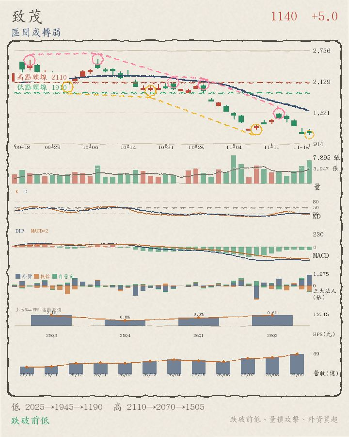
今天帶量收紅、跌破月線 1560.75，跌破前一個轉折低點（高點頸線 2110 還在收盤上方），轉折還沒走出明顯方向。
- 月線位置：收盤 1140 在月線 1560.75 之下；5 日線 1271 也在月線之下（短均在下）；月線走平或向下、5 日線走平或向下
- 量能：成交量是 20 日均量的 1.86 倍，比 20 日均量大不少；收紅又量增，量價配合
- 關鍵價位：高點頸線 2110 還沒突破、還在收盤上方 46.0%；最近轉折高點 1505（低於 24.3%）；最近轉折低點 1190（低於 4.2%）
- 轉折結構：低點 2025、1945、1190 與高點 2110、2070、1505 都沒有明顯遞增，屬於區間震盪或轉弱；還沒確認的轉折低點 11-18 1090（圖上虛線小圈）
貿聯-KY 3665 上市
1550 +140.0
區間或轉弱 成交金額 68.06 億・全榜第 39 名（上市第 30 名）
好條件 2/4：在月線之下、月線下彎
不好條件 2/5：量價攻擊（收紅＋大量）、外資賣超

今天帶量收紅、跌破月線 1606.75，離高點頸線 2685 還差 42.3%，轉折還沒走出明顯方向。
- 月線位置：收盤 1550 在月線 1606.75 之下；5 日線 1493 也在月線之下（短均在下）；月線走平或向下、5 日線向上
- 量能：成交量是 20 日均量的 1.34 倍，比 20 日均量大不少；收紅又量增，量價配合
- 關鍵價位：高點頸線 2685 還沒突破，差 42.3%；最近轉折高點 1630（低於 4.9%）；最近轉折低點 1295（高於 19.7%）
- 轉折結構：低點 1930、1810、1295 與高點 2685、2080、1630 都沒有明顯遞增，屬於區間震盪或轉弱；還沒確認的轉折低點 11-17 1365；還沒確認的轉折高點 11-03 1675、11-18 1550（圖上虛線小圈）
區間或轉弱 成交金額 66.64 億・全榜第 42 名（上市第 31 名）
好條件 3/4：跌破前低、在月線之下、月線下彎
不好條件 1/5：外資賣超

今天收黑、成交量也比平均少、跌破月線 141.2，跌破前一個轉折低點（高點頸線 184 還在收盤上方），轉折還沒走出明顯方向。
- 月線位置：收盤 108 在月線 141.2 之下；5 日線 116.8 也在月線之下（短均在下）；月線走平或向下、5 日線走平或向下
- 量能：成交量是 20 日均量的 0.94 倍，比 20 日均量少一些
- 關鍵價位：高點頸線 184 還沒突破、還在收盤上方 41.3%；最近轉折高點 142（低於 23.9%）；最近轉折低點 115（低於 6.1%）
- 轉折結構：低點 151、151、115 與高點 184、178.5、142 都沒有明顯遞增，屬於區間震盪或轉弱；還沒確認的轉折低點 11-11 127、11-18 102.5；還沒確認的轉折高點 11-12 141、11-18 115（圖上虛線小圈）
區間或轉弱 成交金額 64.28 億・全榜第 43 名（上市第 32 名）
好條件 4/4：跌破前低、在月線之下、月線下彎、外資買超
不好條件 0/5：無
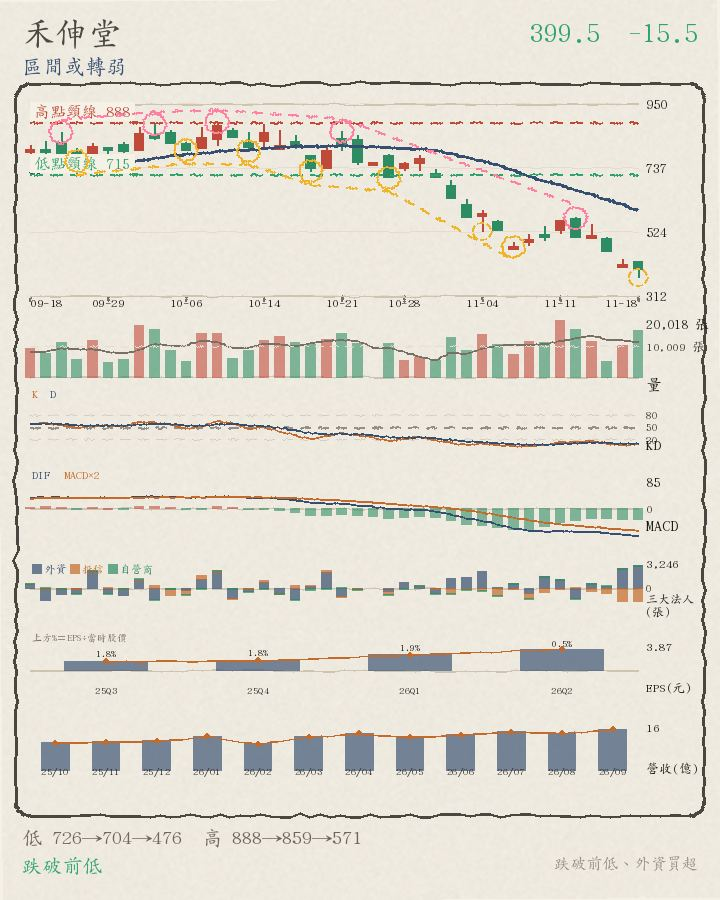
今天帶量收黑、跌破月線 596.05，跌破前一個轉折低點（高點頸線 888 還在收盤上方），轉折還沒走出明顯方向。
- 月線位置：收盤 399.5 在月線 596.05 之下；5 日線 458.5 也在月線之下（短均在下）；月線走平或向下、5 日線走平或向下
- 量能：成交量是 20 日均量的 1.42 倍，比 20 日均量大不少；收黑卻量增，量價背離
- 關鍵價位：高點頸線 888 還沒突破、還在收盤上方 55.0%；最近轉折高點 571（低於 30.0%）；最近轉折低點 475.5（低於 16.0%）
- 轉折結構：低點 726、704、475.5 與高點 888、859、571 都沒有明顯遞增，屬於區間震盪或轉弱；還沒確認的轉折低點 11-04 526、11-18 373.5（圖上虛線小圈）
區間或轉弱 成交金額 63.72 億・全榜第 44 名（上市第 33 名）
好條件 2/4：在月線之下、月線下彎
不好條件 1/5：外資賣超
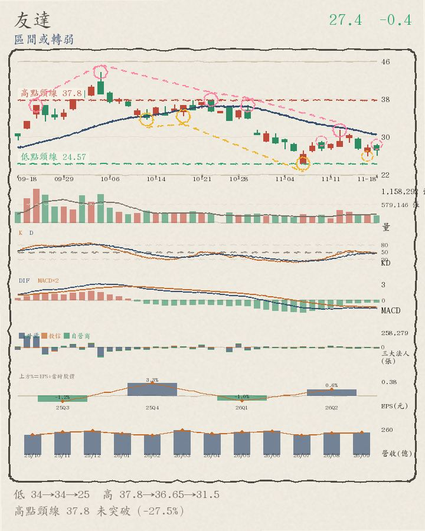
今天收黑、成交量也比平均少、跌破月線 30.563，離高點頸線 37.8 還差 27.5%，轉折還沒走出明顯方向。
- 月線位置：收盤 27.4 在月線 30.563 之下；5 日線 28.5 也在月線之下（短均在下）；月線走平或向下、5 日線向上
- 量能：成交量是 20 日均量的 0.87 倍，比 20 日均量少一些
- 關鍵價位：高點頸線 37.8 還沒突破，差 27.5%；最近轉折高點 31.5（低於 13.0%）；最近轉折低點 24.55（高於 11.6%）
- 轉折結構：低點 33.75、34.45、24.55 與高點 37.8、36.65、31.5 都沒有明顯遞增，屬於區間震盪或轉弱；還沒確認的轉折低點 11-17 26.1；還沒確認的轉折高點 11-10 29.25、11-18 28.55（圖上虛線小圈）
區間或轉弱 成交金額 63.2 億・全榜第 45 名（上市第 34 名）
好條件 3/4：在月線之下、月線下彎、外資買超
不好條件 1/5：量價攻擊（收紅＋大量）
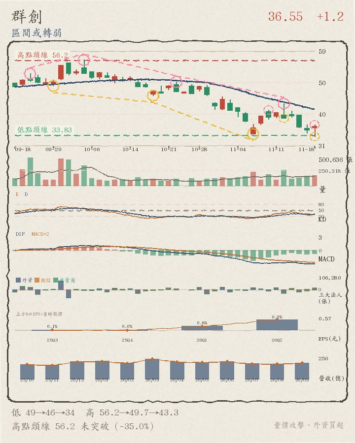
今天帶量收紅、跌破月線 41.617，離高點頸線 56.2 還差 35.0%，轉折還沒走出明顯方向。
- 月線位置：收盤 36.55 在月線 41.617 之下；5 日線 37.39 也在月線之下（短均在下）；月線走平或向下、5 日線走平或向下
- 量能：成交量是 20 日均量的 1.27 倍，比 20 日均量大不少；收紅又量增，量價配合
- 關鍵價位：高點頸線 56.2 還沒突破，差 35.0%；最近轉折高點 43.3（低於 15.6%）；最近轉折低點 34.2（高於 6.9%）
- 轉折結構：低點 48.55、45.65、34.2 與高點 56.2、49.7、43.3 都沒有明顯遞增，屬於區間震盪或轉弱；還沒確認的轉折低點 11-12 38.85、11-18 33.45；還沒確認的轉折高點 11-10 41.4、11-18 37（圖上虛線小圈）
區間或轉弱 成交金額 59.37 億・全榜第 46 名（上市第 35 名）
好條件 2/4：在月線之下、月線下彎
不好條件 2/5：量價攻擊（收紅＋大量）、外資賣超

今天帶量收紅、跌破月線 204.75，離高點頸線 270 還差 25.2%，轉折還沒走出明顯方向。
- 月線位置：收盤 202 在月線 204.75 之下；5 日線 189.2 也在月線之下（短均在下）；月線走平或向下、5 日線向上
- 量能：成交量是 20 日均量的 3.85 倍，比 20 日均量大不少；收紅又量增，量價配合
- 關鍵價位：高點頸線 270 還沒突破，差 25.2%；最近轉折高點 207.5（低於 2.7%）；最近轉折低點 164.5（高於 22.8%）
- 轉折結構：低點 216、240.5、164.5 與高點 270、266、207.5 都沒有明顯遞增，屬於區間震盪或轉弱；還沒確認的轉折低點 11-12 187、11-17 171；還沒確認的轉折高點 11-10 198.5、11-18 202（圖上虛線小圈）
剛突破前高 成交金額 58.81 億・全榜第 47 名（上市第 36 名）
好條件 0/4：無
不好條件 4/5：站上月線、月線向上、量價攻擊（收紅＋大量）、外資賣超
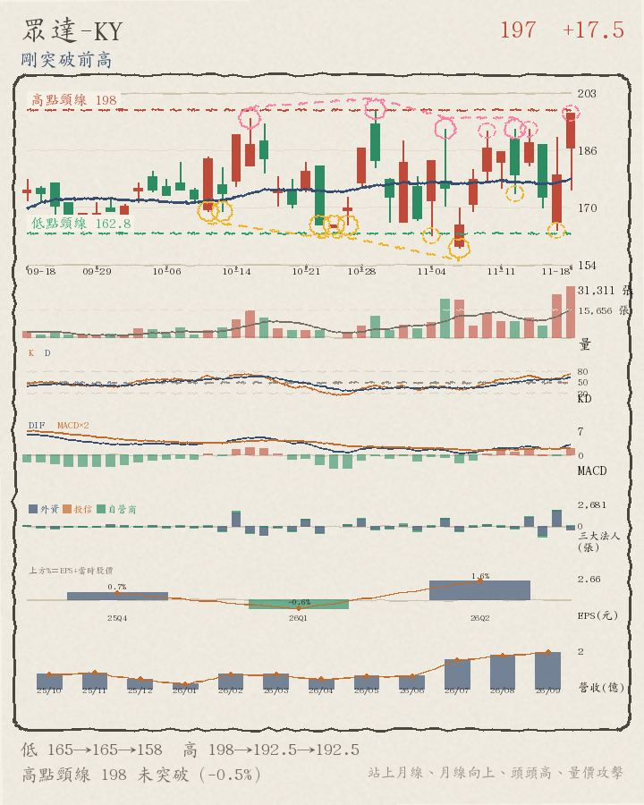
今天帶量收紅、站上月線 178.325，離高點頸線 198 還差 0.5%，高點還在墊高（但底部沒同步墊高）。
- 月線位置：收盤 197 在月線 178.325 之上；5 日線 183.5 也在月線之上（短均在上）；月線向上、5 日線向上
- 量能：成交量是 20 日均量的 3.10 倍，比 20 日均量大不少；收紅又量增，量價配合
- 關鍵價位：高點頸線 198 還沒突破，差 0.5%；最近轉折高點 192.5（高於 2.3%）；最近轉折低點 158.5（高於 24.3%）
- 轉折結構：高點 198、192.5、192.5 墊高 2.3%（頭頭高），但低點 165、165、158.5 沒有同步墊高；還沒確認的轉折低點 11-12 174、11-17 163.5；還沒確認的轉折高點 11-13 192.5、11-18 197（圖上虛線小圈）
區間或轉弱 成交金額 58.54 億・全榜第 48 名（上市第 37 名）
好條件 3/4：跌破前低、在月線之下、月線下彎
不好條件 2/5：量價攻擊（收紅＋大量）、外資賣超
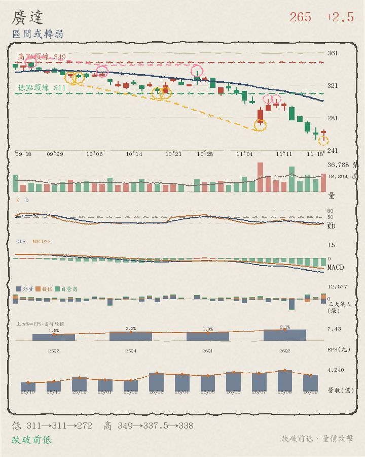
今天帶量收紅、跌破月線 301.425，跌破前一個轉折低點（高點頸線 349 還在收盤上方），轉折還沒走出明顯方向。
- 月線位置：收盤 265 在月線 301.425 之下；5 日線 269.4 也在月線之下（短均在下）；月線走平或向下、5 日線走平或向下
- 量能：成交量是 20 日均量的 1.47 倍，比 20 日均量大不少；收紅又量增，量價配合
- 關鍵價位：高點頸線 349 還沒突破、還在收盤上方 24.1%；最近轉折高點 338（低於 21.6%）；最近轉折低點 272（低於 2.6%）
- 轉折結構：低點 311、311、272 與高點 349、337.5、338 都沒有明顯遞增，屬於區間震盪或轉弱；還沒確認的轉折低點 11-18 253；還沒確認的轉折高點 11-09 304、11-10 304（圖上虛線小圈）
區間或轉弱 成交金額 56.02 億・全榜第 49 名（上市第 38 名）
好條件 3/4：跌破前低、在月線之下、月線下彎
不好條件 1/5：外資賣超
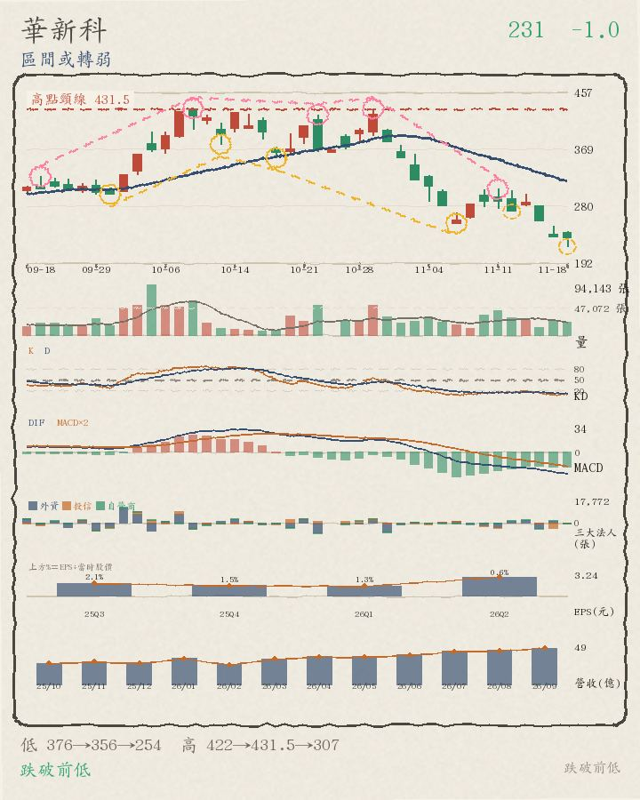
今天收黑、成交量也比平均少、跌破月線 319.175，跌破前一個轉折低點（高點頸線 431.5 還在收盤上方），轉折還沒走出明顯方向。
- 月線位置：收盤 231 在月線 319.175 之下；5 日線 255.7 也在月線之下（短均在下）；月線走平或向下、5 日線走平或向下
- 量能：成交量是 20 日均量的 0.80 倍，比 20 日均量少很多
- 關鍵價位：高點頸線 431.5 還沒突破、還在收盤上方 46.5%；最近轉折高點 307（低於 24.8%）；最近轉折低點 253.5（低於 8.9%）
- 轉折結構：低點 376.5、355.5、253.5 與高點 422、431.5、307 都沒有明顯遞增，屬於區間震盪或轉弱；還沒確認的轉折低點 11-12 272、11-18 217.5（圖上虛線小圈）
區間或轉弱 成交金額 53.22 億・全榜第 50 名（上市第 39 名）
好條件 2/4：在月線之下、月線下彎
不好條件 1/5：外資賣超

今天收紅、但成交量比平均少、跌破月線 176.375，離高點頸線 199.5 還差 18.8%，轉折還沒走出明顯方向。
- 月線位置：收盤 162 在月線 176.375 之下；5 日線 163.8 也在月線之下（短均在下）；月線走平或向下、5 日線走平或向下
- 量能：成交量是 20 日均量的 0.89 倍，比 20 日均量少一些；收紅但量縮，量價背離
- 關鍵價位：高點頸線 199.5 還沒突破，差 18.8%；最近轉折高點 181（低於 10.5%）；最近轉折低點 152（高於 6.6%）
- 轉折結構：低點 182.5、173.5、152 與高點 194.5、199.5、181 都沒有明顯遞增，屬於區間震盪或轉弱；還沒確認的轉折低點 11-17 153；還沒確認的轉折高點 11-09 174.5、11-18 163.5（圖上虛線小圈）
區間或轉弱 成交金額 49.82 億・全榜第 51 名（上市第 40 名）
好條件 4/4：跌破前低、在月線之下、月線下彎、外資買超
不好條件 0/5：無

今天收紅、但成交量比平均少、跌破月線 1719.25，跌破前一個轉折低點（高點頸線 2335 還在收盤上方），轉折還沒走出明顯方向。
- 月線位置：收盤 1475 在月線 1719.25 之下；5 日線 1529 也在月線之下（短均在下）；月線走平或向下、5 日線走平或向下
- 量能：成交量是 20 日均量的 0.80 倍，比 20 日均量少很多；收紅但量縮，量價背離
- 關鍵價位：高點頸線 2335 還沒突破、還在收盤上方 36.8%；最近轉折高點 1990（低於 25.9%）；最近轉折低點 1485（低於 0.7%）
- 轉折結構：低點 2080、1795、1485 與高點 2335、2020、1990 都沒有明顯遞增，屬於區間震盪或轉弱；還沒確認的轉折低點 11-12 1550、11-17 1425；還沒確認的轉折高點 11-12 1715、11-18 1505（圖上虛線小圈）
剛突破前高 成交金額 49.79 億・全榜第 52 名（上市第 41 名）
好條件 1/4：在月線之下
不好條件 2/5：月線向上、外資賣超
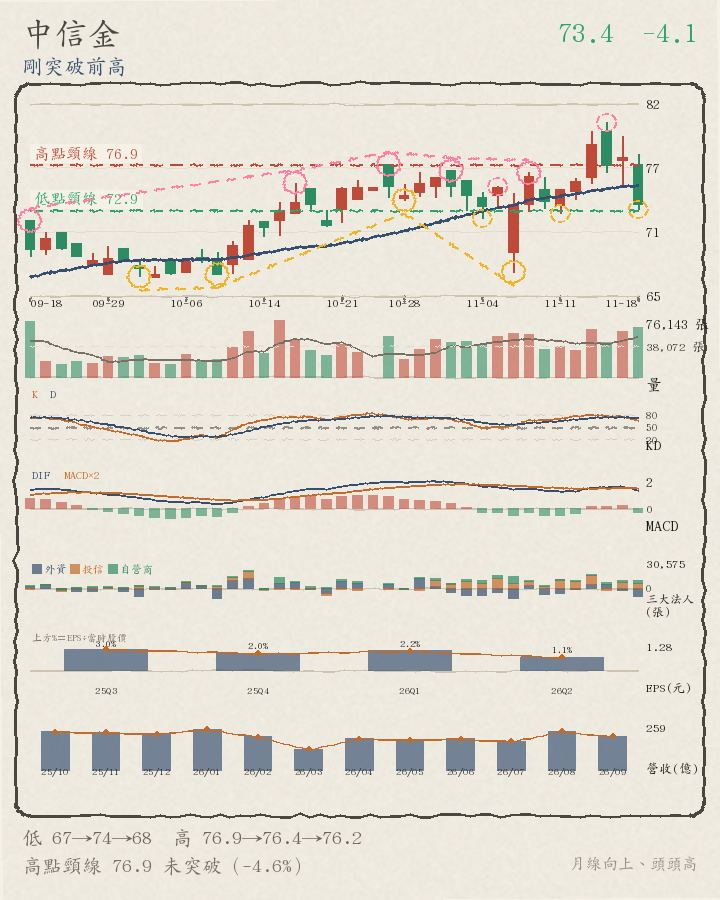
今天帶量收黑、跌破月線 75.085，離高點頸線 76.9 還差 4.6%，高點還在墊高（但底部沒同步墊高）。
- 月線位置：收盤 73.4 在月線 75.085 之下；5 日線 76.36 也在月線之上（短均在上）；月線向上、5 日線向上
- 量能：成交量是 20 日均量的 1.47 倍，比 20 日均量大不少；收黑卻量增，量價背離
- 關鍵價位：高點頸線 76.9 還沒突破，差 4.6%；最近轉折高點 76.2（低於 3.7%）；最近轉折低點 67.5（高於 8.7%）
- 轉折結構：高點 76.9、76.4、76.2 墊高 5.8%（頭頭高），但低點 67.3、73.8、67.5 沒有同步墊高；還沒確認的轉折低點 11-11 72.6、11-18 73；還沒確認的轉折高點 11-05 75、11-16 80.6（圖上虛線小圈）
區間或轉弱 成交金額 46.53 億・全榜第 54 名（上市第 42 名）
好條件 3/4：跌破前低、在月線之下、月線下彎
不好條件 1/5：外資賣超
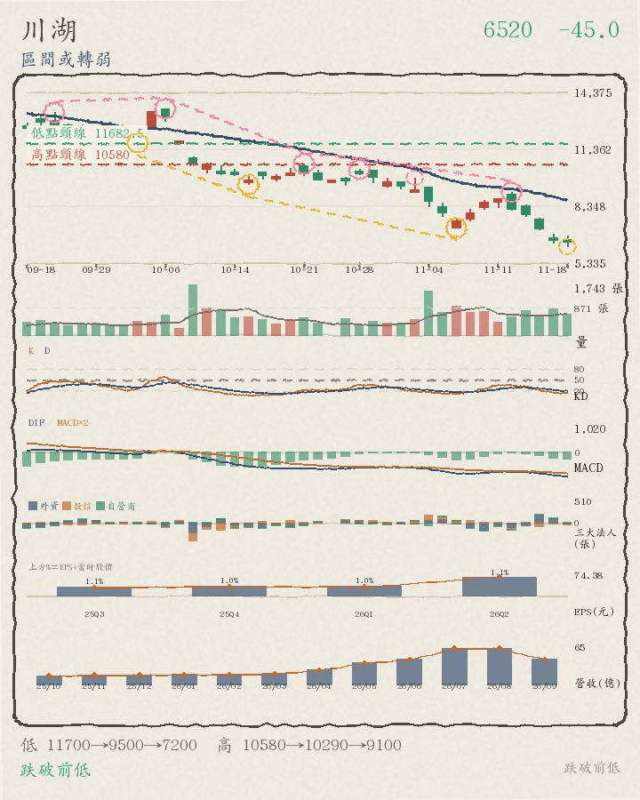
今天帶量收黑、跌破月線 8673，跌破前一個轉折低點（高點頸線 10580 還在收盤上方），轉折還沒走出明顯方向。
- 月線位置：收盤 6520 在月線 8673 之下；5 日線 7251 也在月線之下（短均在下）；月線走平或向下、5 日線走平或向下
- 量能：成交量是 20 日均量的 1.08 倍，比 20 日均量大一些；收黑卻量增，量價背離
- 關鍵價位：高點頸線 10580 還沒突破、還在收盤上方 38.4%；最近轉折高點 9100（低於 28.4%）；最近轉折低點 7200（低於 9.4%）
- 轉折結構：低點 11700、9500、7200 與高點 10580、10290、9100 都沒有明顯遞增，屬於區間震盪或轉弱；還沒確認的轉折低點 11-18 6210；還沒確認的轉折高點 11-03 9850（圖上虛線小圈）
區間或轉弱 成交金額 45.86 億・全榜第 55 名（上市第 43 名）
好條件 2/4：在月線之下、月線下彎
不好條件 1/5：外資賣超
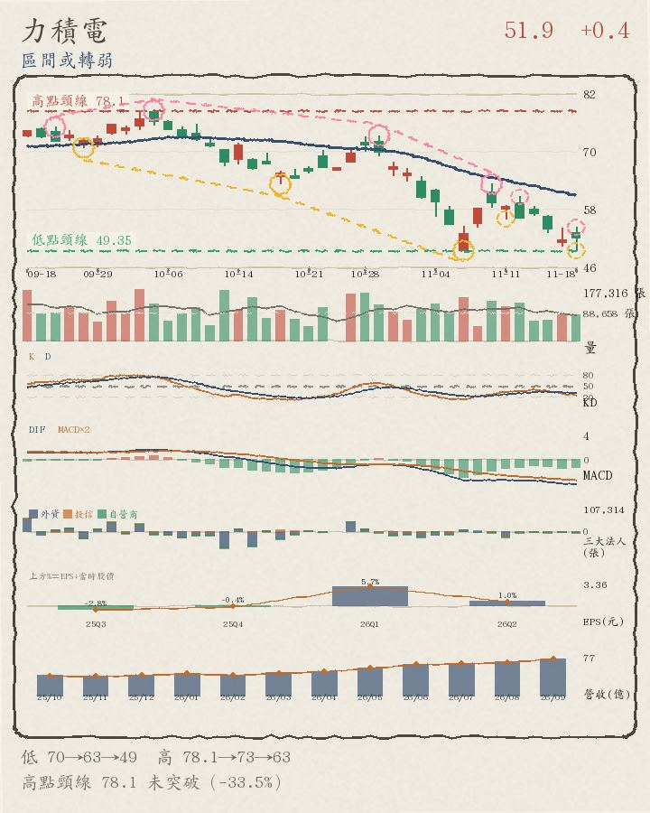
今天收紅、但成交量比平均少、跌破月線 60.72，離高點頸線 78.1 還差 33.5%，轉折還沒走出明顯方向。
- 月線位置：收盤 51.9 在月線 60.72 之下；5 日線 54.04 也在月線之下（短均在下）；月線走平或向下、5 日線走平或向下
- 量能：成交量是 20 日均量的 0.85 倍，比 20 日均量少一些；收紅但量縮，量價背離
- 關鍵價位：高點頸線 78.1 還沒突破，差 33.5%；最近轉折高點 63（低於 17.6%）；最近轉折低點 49.35（高於 5.2%）
- 轉折結構：低點 70.5、63、49.35 與高點 78.1、73、63 都沒有明顯遞增，屬於區間震盪或轉弱；還沒確認的轉折低點 11-11 55.9、11-18 49.35；還沒確認的轉折高點 11-12 60.4、11-18 54.1（圖上虛線小圈）
區間或轉弱 成交金額 42.25 億・全榜第 56 名（上市第 44 名）
好條件 3/4：跌破前低、在月線之下、月線下彎
不好條件 1/5：外資賣超

今天帶量收黑、跌破月線 87.55，跌破前一個轉折低點（高點頸線 123 還在收盤上方），轉折還沒走出明顯方向。
- 月線位置：收盤 69.9 在月線 87.55 之下；5 日線 74.36 也在月線之下（短均在下）；月線走平或向下、5 日線走平或向下
- 量能：成交量是 20 日均量的 1.37 倍，比 20 日均量大不少；收黑卻量增，量價背離
- 關鍵價位：高點頸線 123 還沒突破、還在收盤上方 43.2%；最近轉折高點 88.2（低於 20.7%）；最近轉折低點 71.8（低於 2.6%）
- 轉折結構：低點 114.5、99.2、71.8 與高點 123、107.5、88.2 都沒有明顯遞增，屬於區間震盪或轉弱；還沒確認的轉折低點 11-12 78.2、11-18 66.1；還沒確認的轉折高點 11-12 85.2、11-18 74.8（圖上虛線小圈）
區間或轉弱 成交金額 41.93 億・全榜第 57 名（上市第 45 名）
好條件 2/4：在月線之下、月線下彎
不好條件 1/5：外資賣超
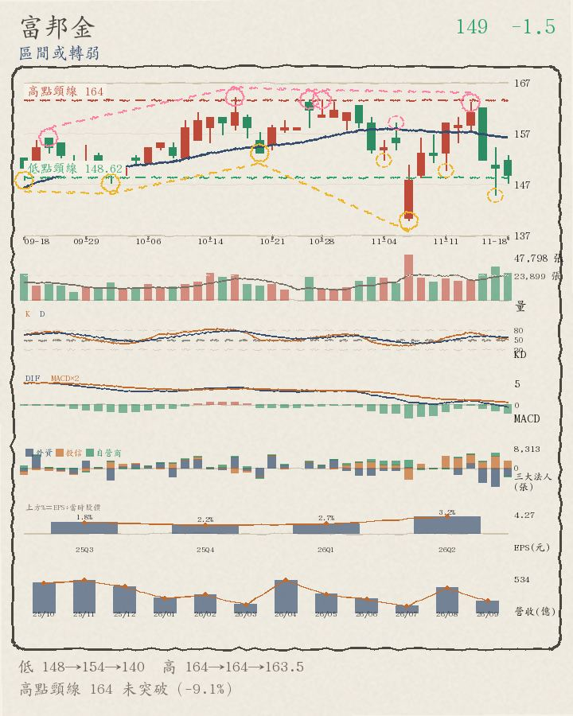
今天帶量收黑、跌破月線 156.575，離高點頸線 164 還差 9.1%，轉折還沒走出明顯方向。
- 月線位置：收盤 149 在月線 156.575 之下；5 日線 154.4 也在月線之下（短均在下）；月線走平或向下、5 日線向上
- 量能：成交量是 20 日均量的 1.34 倍，比 20 日均量大不少；收黑卻量增，量價背離
- 關鍵價位：高點頸線 164 還沒突破，差 9.1%；最近轉折高點 163.5（低於 8.9%）；最近轉折低點 140（高於 6.4%）
- 轉折結構：低點 147.5、153.5、140 與高點 164、164、163.5 都沒有明顯遞增，屬於區間震盪或轉弱；還沒確認的轉折低點 11-11 150、11-17 145；還沒確認的轉折高點 11-05 159.5（圖上虛線小圈）
區間或轉弱 成交金額 41.73 億・全榜第 58 名（上市第 46 名）
好條件 3/4：跌破前低、在月線之下、月線下彎
不好條件 1/5：外資賣超
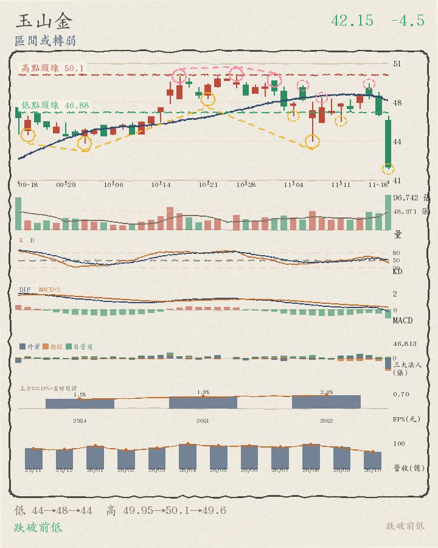
今天帶量收黑、跌破月線 47.883，跌破前一個轉折低點（高點頸線 50.1 還在收盤上方），轉折還沒走出明顯方向。
- 月線位置：收盤 42.15 在月線 47.883 之下；5 日線 46.52 也在月線之下（短均在下）；月線走平或向下、5 日線走平或向下
- 量能：成交量是 20 日均量的 2.98 倍，比 20 日均量大不少；收黑卻量增，量價背離
- 關鍵價位：高點頸線 50.1 還沒突破、還在收盤上方 15.9%；最近轉折高點 49.6（低於 15.0%）；最近轉折低點 44.35（低於 5.0%）
- 轉折結構：低點 44.2、48、44.35 與高點 49.95、50.1、49.6 都沒有明顯遞增，屬於區間震盪或轉弱；還沒確認的轉折低點 11-11 46.1、11-18 42；還沒確認的轉折高點 11-09 48.1、11-16 49.3（圖上虛線小圈）
剛突破前高 成交金額 40.74 億・全榜第 59 名（上市第 47 名）
好條件 1/4：外資買超
不好條件 4/5：站上月線、月線向上、突破頸線、量價攻擊（收紅＋大量）
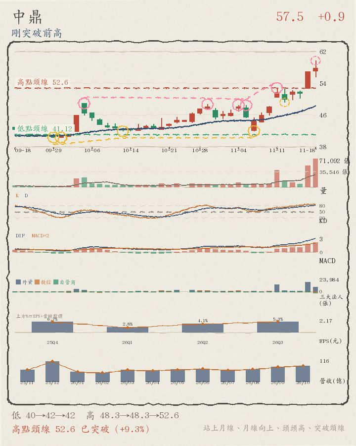
今天帶量收紅、站上月線 48.118，已站上高點頸線 52.6，高點還在墊高（但底部沒同步墊高）。
- 月線位置：收盤 57.5 在月線 48.118 之上；5 日線 53.4 也在月線之上（短均在上）；月線向上、5 日線向上
- 量能：成交量是 20 日均量的 6.04 倍，比 20 日均量大不少；收紅又量增，量價配合
- 關鍵價位：高點頸線 52.6 已站上；最近轉折高點 52.6（高於 9.3%）；最近轉折低點 41.9（高於 37.2%）
- 轉折結構：高點 48.3、48.3、52.6 墊高 12.7%（頭頭高），但低點 40.35、41.9、41.9 沒有同步墊高；還沒確認的轉折低點 11-12 49.05；還沒確認的轉折高點 11-18 59.3（圖上虛線小圈）
區間或轉弱 成交金額 40.56 億・全榜第 60 名（上市第 48 名）
好條件 2/4：在月線之下、月線下彎
不好條件 2/5：量價攻擊（收紅＋大量）、外資賣超
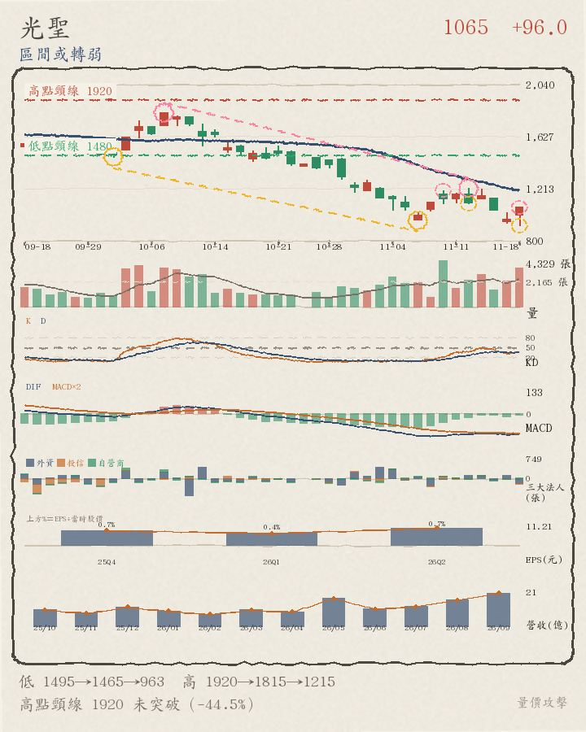
今天帶量收紅、跌破月線 1199.95，離高點頸線 1920 還差 44.5%，轉折還沒走出明顯方向。
- 月線位置：收盤 1065 在月線 1199.95 之下；5 日線 1067.8 也在月線之下（短均在下）；月線走平或向下、5 日線走平或向下
- 量能：成交量是 20 日均量的 1.89 倍，比 20 日均量大不少；收紅又量增，量價配合
- 關鍵價位：高點頸線 1920 還沒突破，差 44.5%；最近轉折高點 1215（低於 12.3%）；最近轉折低點 963（高於 10.6%）
- 轉折結構：低點 1495、1465、963 與高點 1920、1815、1215 都沒有明顯遞增，屬於區間震盪或轉弱；還沒確認的轉折低點 11-12 1095、11-18 920；還沒確認的轉折高點 11-10 1200、11-18 1065（圖上虛線小圈）
區間或轉弱 成交金額 37.08 億・全榜第 61 名（上市第 49 名）
好條件 4/4：跌破前低、在月線之下、月線下彎、外資買超
不好條件 0/5：無
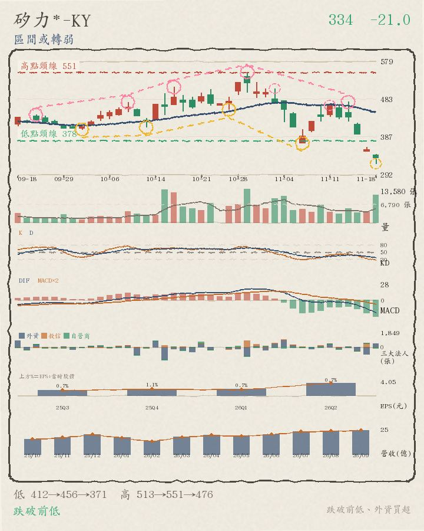
今天帶量收黑、跌破月線 449.4，跌破前一個轉折低點（高點頸線 551 還在收盤上方），轉折還沒走出明顯方向。
- 月線位置：收盤 334 在月線 449.4 之下；5 日線 391.5 也在月線之下（短均在下）；月線走平或向下、5 日線走平或向下
- 量能：成交量是 20 日均量的 1.75 倍，比 20 日均量大不少；收黑卻量增，量價背離
- 關鍵價位：高點頸線 551 還沒突破、還在收盤上方 39.4%；最近轉折高點 476（低於 29.8%）；最近轉折低點 371（低於 10.0%）
- 轉折結構：低點 412、456.5、371 與高點 513、551、476 都沒有明顯遞增，屬於區間震盪或轉弱；還沒確認的轉折低點 11-18 319.5；還沒確認的轉折高點 11-03 510、11-11 467.5（圖上虛線小圈）
區間或轉弱 成交金額 36.02 億・全榜第 62 名（上市第 50 名）
好條件 3/4：跌破前低、在月線之下、月線下彎
不好條件 2/5：量價攻擊（收紅＋大量）、外資賣超
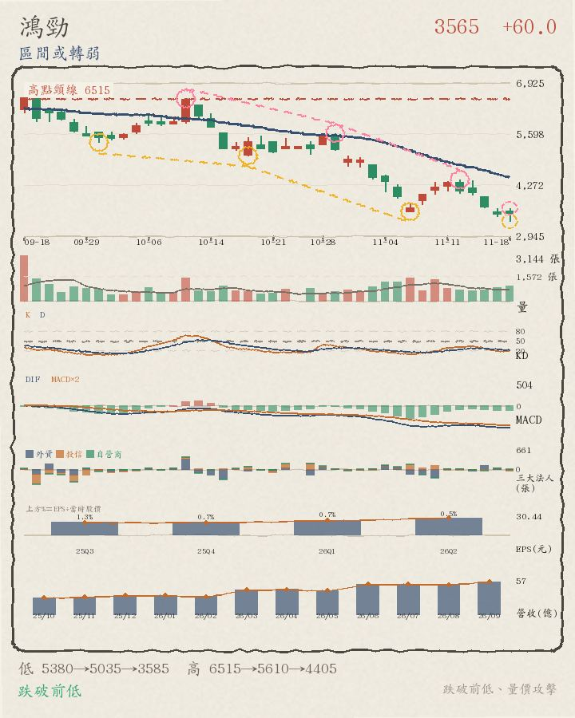
今天帶量收紅、跌破月線 4477.5，跌破前一個轉折低點（高點頸線 6515 還在收盤上方），轉折還沒走出明顯方向。
- 月線位置：收盤 3565 在月線 4477.5 之下；5 日線 3791 也在月線之下（短均在下）；月線走平或向下、5 日線走平或向下
- 量能：成交量是 20 日均量的 1.20 倍，比 20 日均量大不少；收紅又量增，量價配合
- 關鍵價位：高點頸線 6515 還沒突破、還在收盤上方 45.3%；最近轉折高點 4405（低於 19.1%）；最近轉折低點 3585（低於 0.6%）
- 轉折結構：低點 5380、5035、3585 與高點 6515、5610、4405 都沒有明顯遞增，屬於區間震盪或轉弱；還沒確認的轉折低點 11-18 3330；還沒確認的轉折高點 11-18 3670（圖上虛線小圈）
區間或轉弱 成交金額 236.77 億・全榜第 7 名（上櫃第 1 名）
好條件 1/4：在月線之下
不好條件 2/5：月線向上、外資賣超
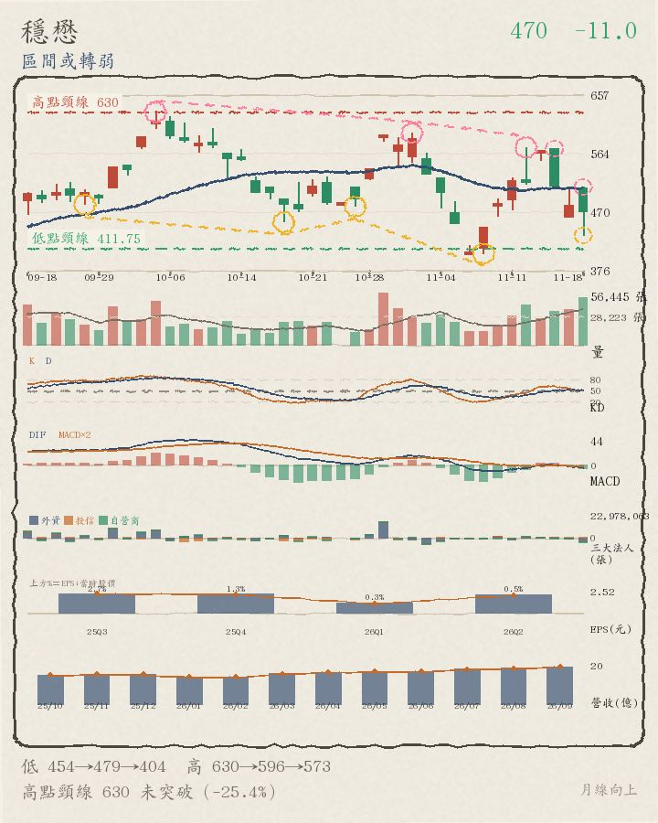
今天帶量收黑、跌破月線 508.15，離高點頸線 630 還差 25.4%，轉折還沒走出明顯方向。
- 月線位置：收盤 470 在月線 508.15 之下；5 日線 509.6 也在月線之上（短均在上）；月線向上、5 日線向上
- 量能：成交量是 20 日均量的 1.84 倍，比 20 日均量大不少；收黑卻量增，量價背離
- 關鍵價位：高點頸線 630 還沒突破，差 25.4%；最近轉折高點 573（低於 18.0%）；最近轉折低點 403.5（高於 16.5%）
- 轉折結構：低點 454、479、403.5 與高點 630、596、573 都沒有明顯遞增，屬於區間震盪或轉弱；還沒確認的轉折低點 11-18 433；還沒確認的轉折高點 11-16 572、11-18 510（圖上虛線小圈）
區間或轉弱 成交金額 150.36 億・全榜第 17 名（上櫃第 2 名）
好條件 4/4：跌破前低、在月線之下、月線下彎、外資買超
不好條件 0/5：無

今天帶量收黑、跌破月線 1117.25，跌破前一個轉折低點（高點頸線 1835 還在收盤上方），轉折還沒走出明顯方向。
- 月線位置：收盤 768 在月線 1117.25 之下；5 日線 873 也在月線之下（短均在下）；月線走平或向下、5 日線走平或向下
- 量能：成交量是 20 日均量的 1.57 倍，比 20 日均量大不少；收黑卻量增，量價背離
- 關鍵價位：高點頸線 1835 還沒突破、還在收盤上方 58.1%；最近轉折高點 1080（低於 28.9%）；最近轉折低點 897（低於 14.4%）
- 轉折結構：低點 1295、1275、897 與高點 1835、1450、1080 都沒有明顯遞增，屬於區間震盪或轉弱；還沒確認的轉折低點 11-12 954、11-18 720（圖上虛線小圈）
區間或轉弱 成交金額 139.22 億・全榜第 18 名（上櫃第 3 名）
好條件 2/4：在月線之下、月線下彎
不好條件 1/5：外資賣超
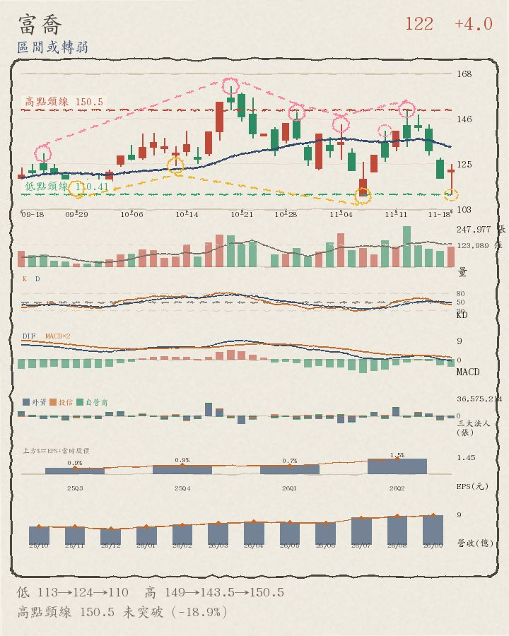
今天收紅、但成交量比平均少、跌破月線 132.75，離高點頸線 150.5 還差 18.9%，轉折還沒走出明顯方向。
- 月線位置：收盤 122 在月線 132.75 之下；5 日線 130 也在月線之下（短均在下）；月線走平或向下、5 日線向上
- 量能：成交量是 20 日均量的 0.94 倍，比 20 日均量少一些；收紅但量縮，量價背離
- 關鍵價位：高點頸線 150.5 還沒突破，差 18.9%；最近轉折高點 150.5（低於 18.9%）；最近轉折低點 109.5（高於 11.4%）
- 轉折結構：低點 113、124、109.5 與高點 149、143.5、150.5 都沒有明顯遞增，屬於區間震盪或轉弱；還沒確認的轉折低點 11-18 110；還沒確認的轉折高點 11-10 140.5（圖上虛線小圈）
區間或轉弱 成交金額 127.8 億・全榜第 20 名（上櫃第 4 名）
好條件 1/4：在月線之下
不好條件 2/5：月線向上、外資賣超
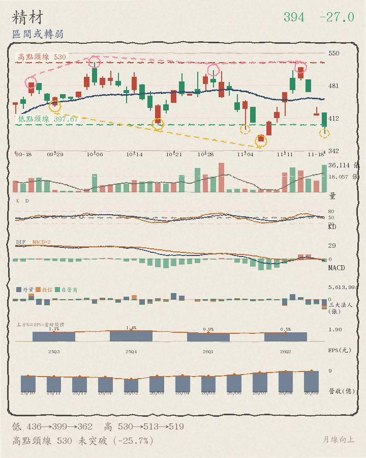
今天帶量收黑、跌破月線 451.55，離高點頸線 530 還差 25.7%，轉折還沒走出明顯方向。
- 月線位置：收盤 394 在月線 451.55 之下；5 日線 454.7 也在月線之上（短均在上）；月線向上、5 日線向上
- 量能：成交量是 20 日均量的 2.28 倍，比 20 日均量大不少；收黑卻量增，量價背離
- 關鍵價位：高點頸線 530 還沒突破，差 25.7%；最近轉折高點 519（低於 24.1%）；最近轉折低點 362.5（高於 8.7%）
- 轉折結構：低點 436.5、399、362.5 與高點 530、513、519 都沒有明顯遞增，屬於區間震盪或轉弱；還沒確認的轉折低點 11-04 387、11-18 379（圖上虛線小圈）
區間或轉弱 成交金額 101.28 億・全榜第 26 名（上櫃第 5 名）
好條件 4/4：跌破前低、在月線之下、月線下彎、外資買超
不好條件 0/5：無
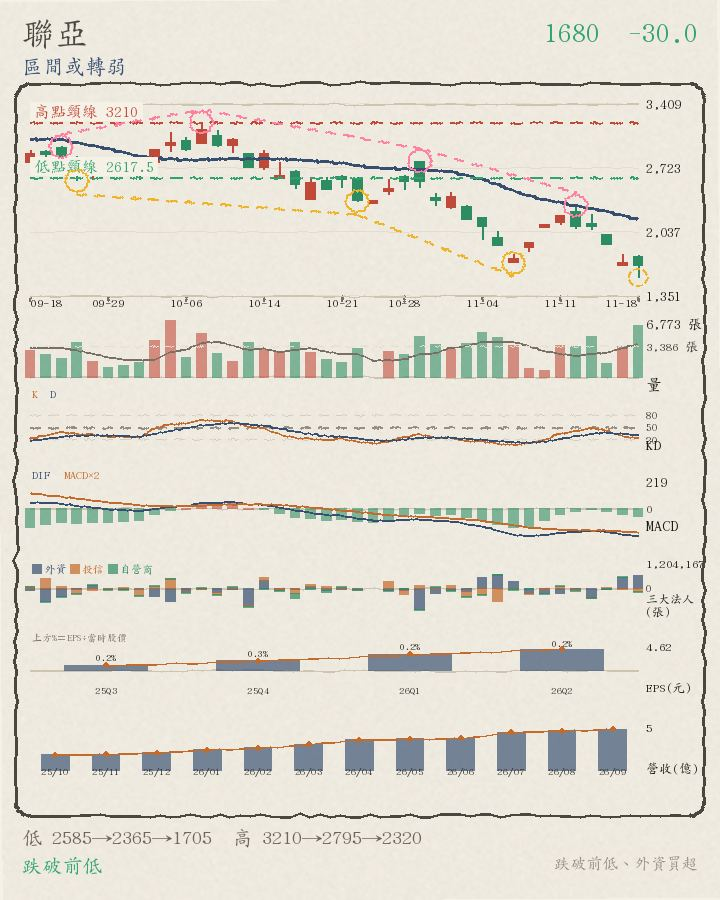
今天帶量收黑、跌破月線 2174.25，跌破前一個轉折低點（高點頸線 3210 還在收盤上方），轉折還沒走出明顯方向。
- 月線位置：收盤 1680 在月線 2174.25 之下；5 日線 1900 也在月線之下（短均在下）；月線走平或向下、5 日線走平或向下
- 量能：成交量是 20 日均量的 1.90 倍，比 20 日均量大不少；收黑卻量增，量價背離
- 關鍵價位：高點頸線 3210 還沒突破、還在收盤上方 47.7%；最近轉折高點 2320（低於 27.6%）；最近轉折低點 1705（低於 1.5%）
- 轉折結構：低點 2585、2365、1705 與高點 3210、2795、2320 都沒有明顯遞增，屬於區間震盪或轉弱；還沒確認的轉折低點 11-18 1550（圖上虛線小圈）
剛突破前高 成交金額 79.24 億・全榜第 32 名（上櫃第 6 名）
好條件 1/4：外資買超
不好條件 3/5：站上月線、月線向上、量價攻擊（收紅＋大量）

今天帶量收紅、站上月線 1322.75，離高點頸線 1760 還差 14.2%，高點還在墊高（但底部沒同步墊高）。
- 月線位置：收盤 1510 在月線 1322.75 之上；5 日線 1449 也在月線之上（短均在上）；月線向上、5 日線向上
- 量能：成交量是 20 日均量的 3.07 倍，比 20 日均量大不少；收紅又量增，量價配合
- 關鍵價位：高點頸線 1760 還沒突破，差 14.2%；最近轉折高點 1575（低於 4.1%）；最近轉折低點 1065（高於 41.8%）
- 轉折結構：高點 1760、1470、1575 墊高 0.6%（頭頭高），但低點 1450、1315、1065 沒有同步墊高；還沒確認的轉折低點 11-04 1135、11-17 1315；還沒確認的轉折高點 11-03 1330、11-18 1585（圖上虛線小圈）
區間或轉弱 成交金額 74.29 億・全榜第 35 名（上櫃第 7 名）
好條件 3/4：在月線之下、月線下彎、外資買超
不好條件 0/5：無
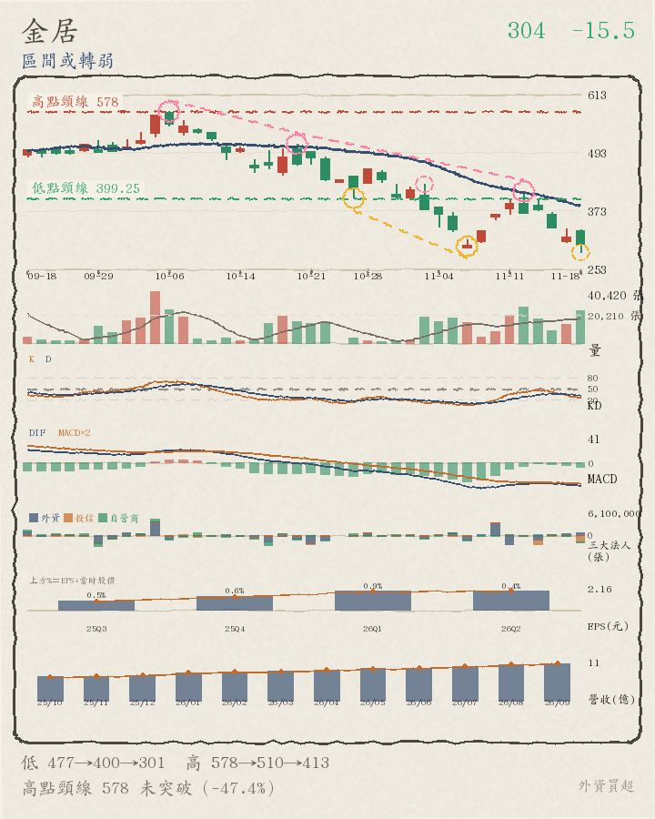
今天帶量收黑、跌破月線 383.75，離高點頸線 578 還差 47.4%，轉折還沒走出明顯方向。
- 月線位置：收盤 304 在月線 383.75 之下；5 日線 341.5 也在月線之下（短均在下）；月線走平或向下、5 日線走平或向下
- 量能：成交量是 20 日均量的 1.98 倍，比 20 日均量大不少；收黑卻量增，量價背離
- 關鍵價位：高點頸線 578 還沒突破，差 47.4%；最近轉折高點 413（低於 26.4%）；最近轉折低點 301（高於 1.0%）
- 轉折結構：低點 477、399.5、301 與高點 578、510、413 都沒有明顯遞增，屬於區間震盪或轉弱；還沒確認的轉折低點 11-18 288；還沒確認的轉折高點 11-03 428（圖上虛線小圈）
區間或轉弱 成交金額 71.5 億・全榜第 37 名（上櫃第 8 名）
好條件 2/4：在月線之下、月線下彎
不好條件 1/5：外資賣超
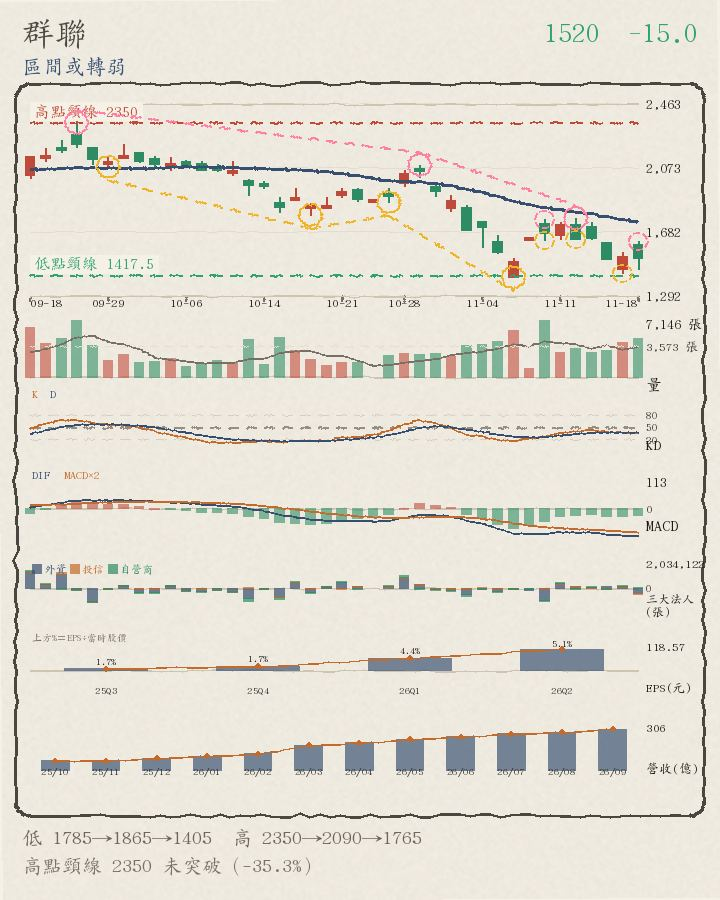
今天帶量收黑、跌破月線 1742.75，離高點頸線 2350 還差 35.3%，轉折還沒走出明顯方向。
- 月線位置：收盤 1520 在月線 1742.75 之下；5 日線 1569 也在月線之下（短均在下）；月線走平或向下、5 日線走平或向下
- 量能：成交量是 20 日均量的 1.47 倍，比 20 日均量大不少；收黑卻量增，量價背離
- 關鍵價位：高點頸線 2350 還沒突破，差 35.3%；最近轉折高點 1765（低於 13.9%）；最近轉折低點 1405（高於 8.2%）
- 轉折結構：低點 1785、1865、1405 與高點 2350、2090、1765 都沒有明顯遞增，屬於區間震盪或轉弱；還沒確認的轉折低點 11-12 1635、11-17 1430；還沒確認的轉折高點 11-10 1760、11-18 1625（圖上虛線小圈）
區間或轉弱 成交金額 69.41 億・全榜第 38 名（上櫃第 9 名）
好條件 4/4：跌破前低、在月線之下、月線下彎、外資買超
不好條件 0/5：無
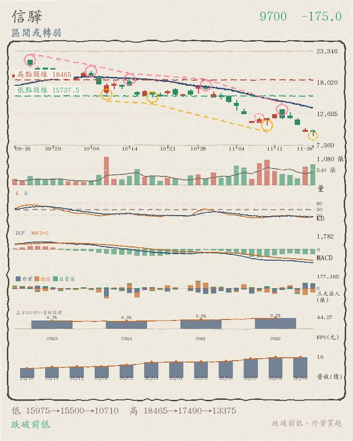
今天帶量收黑、跌破月線 13685.8，跌破前一個轉折低點（高點頸線 18465 還在收盤上方），轉折還沒走出明顯方向。
- 月線位置：收盤 9700 在月線 13685.8 之下；5 日線 10866 也在月線之下（短均在下）；月線走平或向下、5 日線走平或向下
- 量能：成交量是 20 日均量的 1.80 倍，比 20 日均量大不少；收黑卻量增，量價背離
- 關鍵價位：高點頸線 18465 還沒突破、還在收盤上方 47.5%；最近轉折高點 13375（低於 27.5%）；最近轉折低點 10710（低於 9.4%）
- 轉折結構：低點 15975、15500、10710 與高點 18465、17490、13375 都沒有明顯遞增，屬於區間震盪或轉弱；還沒確認的轉折低點 11-18 8915；還沒確認的轉折高點 11-09 11990（圖上虛線小圈）
區間或轉弱 成交金額 67.81 億・全榜第 40 名（上櫃第 10 名）
好條件 2/4：在月線之下、月線下彎
不好條件 2/5：量價攻擊（收紅＋大量）、外資賣超

今天帶量收紅、跌破月線 4428.25，離高點頸線 6160 還差 28.7%，轉折還沒走出明顯方向。
- 月線位置：收盤 4390 在月線 4428.25 之下；5 日線 4403 也在月線之下（短均在下）；月線走平或向下、5 日線向上
- 量能：成交量是 20 日均量的 1.51 倍，比 20 日均量大不少；收紅又量增，量價配合
- 關鍵價位：高點頸線 6160 還沒突破，差 28.7%；最近轉折高點 5100（低於 13.9%）；最近轉折低點 3355（高於 30.8%）
- 轉折結構：低點 5090、4995、3355 與高點 6160、5150、5100 都沒有明顯遞增，屬於區間震盪或轉弱；還沒確認的轉折低點 11-17 3880、11-18 3880；還沒確認的轉折高點 11-18 4390（圖上虛線小圈）
區間或轉弱 成交金額 66.79 億・全榜第 41 名（上櫃第 11 名）
好條件 3/4：跌破前低、在月線之下、月線下彎
不好條件 2/5：量價攻擊（收紅＋大量）、外資賣超
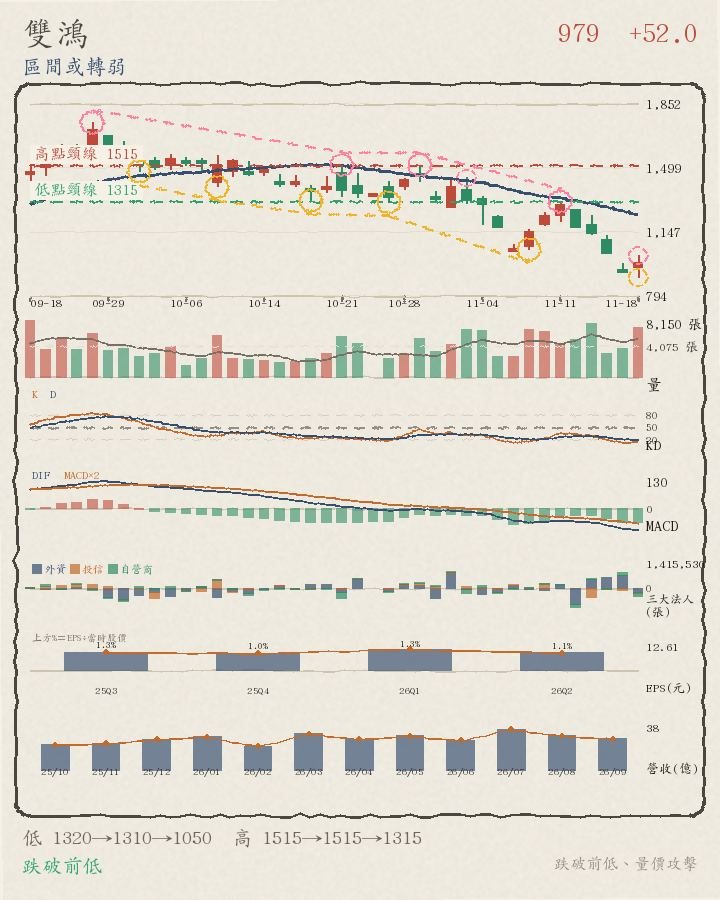
今天帶量收紅、跌破月線 1241.55，跌破前一個轉折低點（高點頸線 1515 還在收盤上方），轉折還沒走出明顯方向。
- 月線位置：收盤 979 在月線 1241.55 之下；5 日線 1049.2 也在月線之下（短均在下）；月線走平或向下、5 日線走平或向下
- 量能：成交量是 20 日均量的 1.46 倍，比 20 日均量大不少；收紅又量增，量價配合
- 關鍵價位：高點頸線 1515 還沒突破、還在收盤上方 35.4%；最近轉折高點 1315（低於 25.6%）；最近轉折低點 1050（低於 6.8%）
- 轉折結構：低點 1320、1310、1050 與高點 1515、1515、1315 都沒有明顯遞增，屬於區間震盪或轉弱；還沒確認的轉折低點 11-18 896；還沒確認的轉折高點 11-03 1445、11-18 1015（圖上虛線小圈）
區間或轉弱 成交金額 49.1 億・全榜第 53 名（上櫃第 12 名）
好條件 2/4：在月線之下、月線下彎
不好條件 1/5：外資賣超
今天收黑、成交量也比平均少、跌破月線 681.7，離高點頸線 1260 還差 56.8%，轉折還沒走出明顯方向。
- 月線位置：收盤 544 在月線 681.7 之下；5 日線 583.8 也在月線之下（短均在下）；月線走平或向下、5 日線向上
- 量能：成交量是 20 日均量的 0.81 倍，比 20 日均量少很多
- 關鍵價位：高點頸線 1260 還沒突破，差 56.8%；最近轉折高點 663（低於 17.9%）；最近轉折低點 508（高於 7.1%）
- 轉折結構：低點 875、872、508 與高點 1010、1260、663 都沒有明顯遞增，屬於區間震盪或轉弱；還沒確認的轉折低點 11-18 507；還沒確認的轉折高點 11-18 577（圖上虛線小圈）
區間或轉弱 成交金額 31.65 億・全榜第 63 名（上櫃第 13 名）
好條件 3/4：在月線之下、月線下彎、外資買超
不好條件 1/5：量價攻擊（收紅＋大量）

今天收紅、跌破月線 178.1，離高點頸線 223 還差 36.1%，轉折還沒走出明顯方向。
- 月線位置：收盤 142.5 在月線 178.1 之下；5 日線 155.5 也在月線之下（短均在下）；月線走平或向下、5 日線走平或向下
- 量能：成交量是 20 日均量的 1.03 倍，跟 20 日均量差不多
- 關鍵價位：高點頸線 223 還沒突破，差 36.1%；最近轉折高點 180（低於 20.8%）；最近轉折低點 142（高於 0.4%）
- 轉折結構：低點 211、194.5、142 與高點 217、223、180 都沒有明顯遞增，屬於區間震盪或轉弱；還沒確認的轉折低點 11-18 132（圖上虛線小圈）
區間或轉弱 成交金額 28.53 億・全榜第 64 名（上櫃第 14 名）
好條件 3/4：在月線之下、月線下彎、外資買超
不好條件 1/5：量價攻擊（收紅＋大量）
今天帶量收紅、跌破月線 399.325，離高點頸線 588 還差 44.2%，轉折還沒走出明顯方向。
- 月線位置：收盤 328 在月線 399.325 之下；5 日線 348.4 也在月線之下（短均在下）；月線走平或向下、5 日線走平或向下
- 量能：成交量是 20 日均量的 1.76 倍，比 20 日均量大不少；收紅又量增，量價配合
- 關鍵價位：高點頸線 588 還沒突破，差 44.2%；最近轉折高點 410.5（低於 20.1%）；最近轉折低點 312（高於 5.1%）
- 轉折結構：低點 545、445、312 與高點 588、531、410.5 都沒有明顯遞增，屬於區間震盪或轉弱；還沒確認的轉折低點 11-18 300.5；還沒確認的轉折高點 11-18 340.5（圖上虛線小圈）
區間或轉弱 成交金額 26.95 億・全榜第 65 名（上櫃第 15 名）
好條件 1/4：月線下彎
不好條件 3/5：站上月線、量價攻擊（收紅＋大量）、外資賣超
今天帶量收紅、站上月線 2888.75，離高點頸線 3580 還差 18.6%，轉折還沒走出明顯方向。
- 月線位置：收盤 2915 在月線 2888.75 之上；5 日線 3036 也在月線之上（短均在上）；月線走平或向下、5 日線向上
- 量能：成交量是 20 日均量的 1.20 倍，比 20 日均量大不少；收紅又量增，量價配合
- 關鍵價位：高點頸線 3580 還沒突破，差 18.6%；最近轉折高點 3505（低於 16.8%）；最近轉折低點 2250（高於 29.6%）
- 轉折結構：低點 3000、2825、2250 與高點 3580、3345、3505 都沒有明顯遞增，屬於區間震盪或轉弱；還沒確認的轉折低點 11-18 2625；還沒確認的轉折高點 11-18 2990（圖上虛線小圈）
區間或轉弱 成交金額 26.84 億・全榜第 66 名（上櫃第 16 名）
好條件 4/4：跌破前低、在月線之下、月線下彎、外資買超
不好條件 0/5：無
今天帶量收黑、跌破月線 1069.4，跌破前一個轉折低點（高點頸線 1680 還在收盤上方），轉折還沒走出明顯方向。
- 月線位置：收盤 771 在月線 1069.4 之下；5 日線 861 也在月線之下（短均在下）；月線走平或向下、5 日線走平或向下
- 量能：成交量是 20 日均量的 1.74 倍，比 20 日均量大不少；收黑卻量增，量價背離
- 關鍵價位：高點頸線 1680 還沒突破、還在收盤上方 54.1%；最近轉折高點 1060（低於 27.3%）；最近轉折低點 864（低於 10.8%）
- 轉折結構：低點 1180、1180、864 與高點 1680、1360、1060 都沒有明顯遞增，屬於區間震盪或轉弱；還沒確認的轉折低點 11-18 707（圖上虛線小圈）
區間或轉弱 成交金額 26.17 億・全榜第 67 名（上櫃第 17 名）
好條件 3/4：在月線之下、月線下彎、外資買超
不好條件 1/5：量價攻擊（收紅＋大量）
今天帶量收紅、跌破月線 2298.5，離高點頸線 3635 還差 39.1%，轉折還沒走出明顯方向。
- 月線位置：收盤 2215 在月線 2298.5 之下；5 日線 2218 也在月線之下（短均在下）；月線走平或向下、5 日線向上
- 量能：成交量是 20 日均量的 1.22 倍，比 20 日均量大不少；收紅又量增，量價配合
- 關鍵價位：高點頸線 3635 還沒突破，差 39.1%；最近轉折高點 2425（低於 8.7%）；最近轉折低點 1825（高於 21.4%）
- 轉折結構：低點 2530、2470、1825 與高點 3635、2675、2425 都沒有明顯遞增，屬於區間震盪或轉弱；還沒確認的轉折低點 11-04 2005、11-18 2070；還沒確認的轉折高點 11-17 2315、11-18 2315（圖上虛線小圈）
區間或轉弱 成交金額 23.72 億・全榜第 68 名（上櫃第 18 名）
好條件 4/4：跌破前低、在月線之下、月線下彎、外資買超
不好條件 0/5：無
今天帶量收黑、跌破月線 235.8，跌破前一個轉折低點（高點頸線 312.5 還在收盤上方），轉折還沒走出明顯方向。
- 月線位置：收盤 166.5 在月線 235.8 之下；5 日線 190.5 也在月線之下（短均在下）；月線走平或向下、5 日線走平或向下
- 量能：成交量是 20 日均量的 1.37 倍，比 20 日均量大不少；收黑卻量增，量價背離
- 關鍵價位：高點頸線 312.5 還沒突破、還在收盤上方 46.7%；最近轉折高點 228.5（低於 27.1%）；最近轉折低點 190.5（低於 12.6%）
- 轉折結構：低點 302.128、248、190.5 與高點 302.128、312.5、228.5 都沒有明顯遞增，屬於區間震盪或轉弱；還沒確認的轉折低點 11-12 204、11-18 156；還沒確認的轉折高點 11-03 266.5（圖上虛線小圈）
區間或轉弱 成交金額 23.71 億・全榜第 69 名（上櫃第 19 名）
好條件 2/4：在月線之下、月線下彎
不好條件 1/5：外資賣超
今天帶量收黑、跌破月線 87.49，離高點頸線 140 還差 49.9%，轉折還沒走出明顯方向。
- 月線位置：收盤 70.1 在月線 87.49 之下；5 日線 76.08 也在月線之下（短均在下）；月線走平或向下、5 日線走平或向下
- 量能：成交量是 20 日均量的 1.40 倍，比 20 日均量大不少；收黑卻量增，量價背離
- 關鍵價位：高點頸線 140 還沒突破，差 49.9%；最近轉折高點 87.8（低於 20.2%）；最近轉折低點 67.3（高於 4.2%）
- 轉折結構：低點 100、103.5、67.3 與高點 140、113、87.8 都沒有明顯遞增，屬於區間震盪或轉弱；還沒確認的轉折低點 11-12 81、11-18 65.2；還沒確認的轉折高點 11-18 75.6（圖上虛線小圈）
區間或轉弱 成交金額 22.05 億・全榜第 70 名（上櫃第 20 名）
好條件 3/4：跌破前低、在月線之下、月線下彎
不好條件 1/5：外資賣超
今天帶量收黑、跌破月線 1007，跌破前一個轉折低點（高點頸線 1375 還在收盤上方），轉折還沒走出明顯方向。
- 月線位置：收盤 836 在月線 1007 之下；5 日線 890.4 也在月線之下（短均在下）；月線走平或向下、5 日線走平或向下
- 量能：成交量是 20 日均量的 1.49 倍，比 20 日均量大不少；收黑卻量增，量價背離
- 關鍵價位：高點頸線 1375 還沒突破、還在收盤上方 39.2%；最近轉折高點 1025（低於 18.4%）；最近轉折低點 851（低於 1.8%）
- 轉折結構：低點 1065、1065、851 與高點 1375、1205、1025 都沒有明顯遞增，屬於區間震盪或轉弱；還沒確認的轉折低點 11-17 780；還沒確認的轉折高點 11-10 1010、11-18 879（圖上虛線小圈）